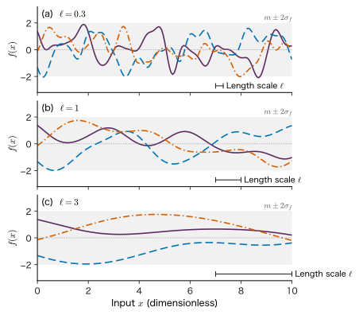
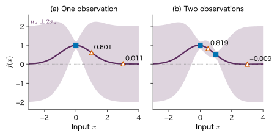

Chapter 12Gaussian Process Regression — Placing a Distribution on Functions
- We varied the dopant amount and measured the ionic conductivity at only 10 points. How can we predict the value at a dopant amount we did not measure, and attach to that prediction a band expressing “how certain it is”?
- How should the width of the prediction differ near and far from the measured points? Why does the spread of the next measured value not become 0 even exactly at a measured point?
- How do we choose the “smoothness” of the curve from the data?
Suppose we have made 10 samples and measured a property of each. If we draw a smooth curve through the 10 measured points, we can get a rough idea of the values at conditions we did not measure. However, that curve is not uniquely determined. There are infinitely many curves through the 10 points; near the measured points they all take almost the same value, but between the points and outside the measured range they disagree widely. The size of this disagreement should be a measure of “how certain the prediction is.” Gaussian process regression in this chapter turns this idea directly into equations. We place a probability distribution on the whole set of possible curves, lower the probability of the curves that disagree with the data, and then report the mean of the remaining curves as the predicted value and their spread as the uncertainty.
In the Bayesian linear regression of Chapter 8, we placed a prior distribution on the weights $\bm{w}$ and obtained the predictive distribution. In this chapter we do not go through the weights; we place a Gaussian distribution on the function values themselves. The only tool we need is the formula for the conditional distribution of a multivariate Gaussian distribution from Chapter 3, and the predictive mean and variance are obtained in closed form. In the second half we describe, in order, how to choose the length scale, which determines the smoothness of the curve, by means of the marginal likelihood; stable computation by the Cholesky decomposition; the relation to the kernel ridge regression of Chapter 10; and the computational cost and limits of applicability. Finally, we apply the method to Data C (synthetic data for teaching purposes: dopant amount and ionic conductivity) and connect to the Bayesian optimization of the next chapter.
- You can define a Gaussian process by the property that “the function values at any finite set of inputs follow a multivariate Gaussian distribution,” and explain the roles of the mean function and the covariance function (kernel).
- You can derive, from the prior distribution on the weights in Bayesian linear regression, that the covariance of the function values is $\sigma_w^{2}\bm{\phi}(\bm{x})^{\tp}\bm{\phi}(\bm{x}')$.
- You can write the joint distribution of the observations and the values to be predicted, and derive the predictive mean $\mu_*$ and predictive variance $\sigma_*^{2}$ from the conditional-distribution formula of Chapter 3. You can compute by hand the cases of one or two observations.
- You can distinguish, and draw in a figure, the variance $\sigma_*^{2}$ of the latent function $f_*$ and the variance $\sigma_*^{2}+\sigma^{2}$ of the observed value $y_*$.
- You can explain the meaning of the three terms of the log marginal likelihood and use it to choose the length scale.
- You can write the procedure for computing the prediction and the marginal likelihood with the Cholesky decomposition, and explain how to deal with jitter and negative variance.
- You can explain the relation to kernel ridge regression, the computational cost $O(N^{3})$, and the limitations such as extrapolation, high dimensions, and the assumption of stationarity.
Sections for the introductory route: This chapter belongs to the detailed route. On the introductory route, read only 12.13 (Summary) and go on to Chapter 13 (Sections 13.1–13.3 of Chapter 13 are written so that they can be understood without reading this chapter).
12.1 Placing a Distribution on FunctionsDetailed Route
12.1.1 What we want to do
The Bayesian linear regression of Chapter 8 placed a prior distribution on the weights $\bm{w}$ of the model $f(\bm{x};\bm{w})=\bm{w}^{\tp}\bm{\phi}(\bm{x})$, updated it to a posterior distribution with the data, and obtained the predictive distribution. Once the weights are fixed, the function is fixed, so the distribution of the weights indirectly determines a “distribution of functions.” In that case, can we place a distribution directly on the function itself, without going through the weights? This is the starting point of this chapter.
However, a function $f(x)$ has a value at every point of the real line, so it is a “collection of infinitely many numbers.” It is hard to write a probability density on an infinite-dimensional vector. So we change our way of thinking. What we actually use in computation is only the values at the $N$ observed inputs and at the few inputs where we want predictions. We therefore specify the distribution of the function by the property that “whichever finite set of inputs we choose, the set of function values there follows a multivariate Gaussian distribution” (Figure 12.1). For a finite set, the multivariate Gaussian distribution of Chapter 3 can be used as it is.
12.1.2 Definitions and notation
Notation: “Gauss” and “Gaussian process”
In the Japanese original of this book, the names of distributions and theorems are written with the personal name in Latin script (Gauss distribution, Bayes's theorem). However, “Gaussian process (regression),” “Bayesian inference,” and “Bayesian optimization” are written in katakana, because this way of writing is established in the field, and we keep it. Consequently the Japanese text of this chapter has “Gauss distribution” and “Gaussian process” side by side, but both come from the same personal name and concern the same Gaussian distribution. In English, the term is Gaussian process (GP).
Definition 12.1: Gaussian process
Let $f(\bm{x})$ be a function of the input $\bm{x}\in\R^{D}$. If, whichever finite set of inputs $\bm{x}_1,\dots,\bm{x}_N$ ($N$ an arbitrary positive integer) we choose, the vector of function values $\bm{f}=(f(\bm{x}_1),\dots,f(\bm{x}_N))^{\tp}\in\R^{N}$ follows a multivariate Gaussian distribution, then $f$ is called a Gaussian process. Its mean and covariance are determined by two functions:
- the mean function $m(\bm{x})=\Ex[f(\bm{x})]$ (scalar-valued)
- the covariance function (kernel) $k(\bm{x},\bm{x}')=\Cov[f(\bm{x}),f(\bm{x}')]$ (scalar-valued)
and we write $f\sim\GP(m,k)$. That is, with $\bm{m}=(m(\bm{x}_1),\dots,m(\bm{x}_N))^{\tp}\in\R^{N}$ and the Gram matrix $\bm{K}\in\R^{N\times N}$ whose entries are $K_{nm}=k(\bm{x}_n,\bm{x}_m)$,
holds for every set of inputs. Here the probability is that of the distribution of $\bm{f}$ “given the inputs $\bm{x}_1,\dots,\bm{x}_N$,” and the inputs themselves are not treated as random variables (we omit writing the inputs in the conditioning).
For this definition to be meaningful, two conditions are needed.
- Being a valid covariance matrix: for every set of inputs, $\bm{K}$ must be a symmetric positive semidefinite matrix. This is exactly the condition for a positive definite kernel described in Chapter 10. We cannot use an arbitrary function $k$ as a covariance function.
- Not contradicting itself: the two-dimensional distribution obtained by marginalizing out $f(\bm{x}_3)$ from the three-dimensional distribution for the set of inputs $\{\bm{x}_1,\bm{x}_2,\bm{x}_3\}$ must coincide with the distribution constructed by choosing $\{\bm{x}_1,\bm{x}_2\}$ from the start. A marginal distribution of a multivariate Gaussian distribution just picks out the corresponding parts of the mean and covariance (Theorem 3.5 (1) of Chapter 3), so as long as $\bm{m}$ and $\bm{K}$ are “built by applying the functions $m$ and $k$ to the inputs,” this condition is automatically satisfied.
In other words, specifying a Gaussian process is the same as specifying one pair consisting of a mean function $m$ and a positive definite kernel $k$.
Example 12.1: Joint distribution of function values at three inputs
Consider the Gaussian process with mean function $m(x)=0$ and kernel $k(x,x')=\exp\!\left[-(x-x')^{2}/2\right]$ (the RBF kernel of Section 12.2 with $\sigma_f=1$, $\ell=1$; $x$ is dimensionless). (1) Write the distribution of $\bm{f}=(f(x_1),f(x_2),f(x_3))^{\tp}$ at the inputs $x_1=0$, $x_2=1$, $x_3=3$. (2) Find the correlation coefficient between $f(x_1)$ and $f(x_2)$, and that between $f(x_1)$ and $f(x_3)$. (3) Find the probability that $f(x_1)$ and $f(x_2)$ have the same sign. For a two-dimensional Gaussian distribution with mean 0 and correlation coefficient $\rho$, this probability is $\tfrac12+\tfrac{1}{\pi}\arcsin\rho$ (the result in Chapter 3's two-dimensional Gaussian distribution that the tilt of the ellipse increases the probability of the quadrants with the same sign).
Solution. (1) The entries are $k(0,1)=e^{-1/2}=0.6065$, $k(0,3)=e^{-9/2}=0.0111$, $k(1,3)=e^{-2}=0.1353$, and the diagonal entries are $k(x,x)=1$, so
$$ \bm{f}\sim\Normal\!\left(\bm{0},\ \begin{pmatrix}1&0.6065&0.0111\\0.6065&1&0.1353\\0.0111&0.1353&1\end{pmatrix}\right). $$The eigenvalues of this matrix are $0.381,\ 0.995,\ 1.624$, all positive, so it is indeed a covariance matrix.
(2) Since all the variances are 1, the correlation coefficient is the covariance itself: $\rho_{12}=0.6065$, $\rho_{13}=0.0111$. Values at a distance of 1 are strongly linked, and values at a distance of 3 are almost unrelated.
(3) We obtain the following.
If they were independent the probability would be 0.5, but because of the correlation it is 0.707. The property that “function values are similar at nearby inputs” shows up as a probability.
12.2 The Mean Function and the Covariance FunctionDetailed Route
12.2.1 The RBF kernel
In this chapter we mainly use the following RBF kernel (also called the Gaussian kernel or the squared exponential kernel). It is the same kernel that we introduced in Section 10.5 of Chapter 10.
\begin{equation} k(\bm{x},\bm{x}')=\sigma_f^{2}\exp\!\left(-\frac{\norm{\bm{x}-\bm{x}'}^{2}}{2\ell^{2}}\right) \label{eq:12-rbf} \end{equation}It has two parameters.
- Signal variance $\sigma_f^{2}$ ($\sigma_f\gt0$ is the standard deviation of the signal): setting $\bm{x}=\bm{x}'$ gives $k(\bm{x},\bm{x})=\sigma_f^{2}=\Var[f(\bm{x})]$. It determines how widely the function values fluctuate around the mean function. Its unit is the same as the unit of $f$ ($\sigma_f^{2}$ has the square of that unit).
- Length scale $\ell\gt0$: it determines how far apart two inputs must be for the correlation of the function values to weaken. Its unit is the same as the unit of the input $\bm{x}$ (for Data C, mol%).
The meaning becomes clear in terms of the correlation coefficient. For two points at distance $r=\norm{\bm{x}-\bm{x}'}$, the correlation coefficient of the function values is
$$ \rho(r)=\frac{k(\bm{x},\bm{x}')}{\sqrt{k(\bm{x},\bm{x})\,k(\bm{x}',\bm{x}')}}=\exp\!\left(-\frac{r^{2}}{2\ell^{2}}\right) $$and does not depend on $\sigma_f$. It equals $e^{-1/2}=0.61$ at $r=\ell$, $e^{-2}=0.14$ at $r=2\ell$, and $e^{-4.5}=0.011$ at $r=3\ell$. Roughly speaking, $\ell$ is “the distance in the input over which the function changes to a roughly different value.”
The mean function $m(\bm{x})$ is the “rough height of the function” before we see any data. In this chapter we use a constant $m$ (that is, $m(\bm{x})=m$ takes the same value for every $\bm{x}$). If the quantity has values near $-5$, as in Data C, and we take $m=0$, then away from the data the prediction is pulled back toward 0, which is unnatural (Section 12.4 and Section 12.11). In practice, one often uses the mean $\bar{y}$ of the observed values as $m$, or standardizes $y$ (subtracts the mean and divides by the standard deviation) and then fits a Gaussian process with $m=0$.
12.2.2 Drawing functions from the prior distribution
A Gaussian process is a probability distribution over functions, so we can draw functions as “samples from the prior” and look at them. The procedure is as follows.
- Take a fine grid of inputs $x^{(1)},\dots,x^{(G)}$ ($G$ points).
- Form the Gram matrix $\bm{K}\in\R^{G\times G}$ on the grid and compute its Cholesky decomposition $\bm{K}=\bm{L}\bm{L}^{\tp}$ ($\bm{L}$ is a lower triangular matrix; Section 12.8).
- Draw a vector $\bm{z}\sim\Normal(\bm{0},\bm{I}_G)$ of standard Gaussian random numbers and set $\bm{f}=m\bm{1}+\bm{L}\bm{z}$.
By Theorem 3.4 of Chapter 3 (a linear transformation of a Gaussian distribution is Gaussian), $\Cov[\bm{f}]=\bm{L}\,\bm{I}\,\bm{L}^{\tp}=\bm{K}$, so $\bm{f}$ follows $\Normal(m\bm{1},\bm{K})$. If the grid is fine, adjacent rows of $\bm{K}$ become almost identical and the matrix comes close to being numerically singular. In that case we add a small value of about $10^{-8}$ (the jitter) to the diagonal before decomposing (Section 12.8).

default_rng(20261112), a grid of 161 points, jitter $10^{-8}$); only $\ell$ was changed. The gray band is $m\pm2\sigma_f$, and the horizontal bar at the lower right shows the length $\ell$.From Figure 12.2 we see that $\ell$ determines the “fineness of the waves” of the function and $\sigma_f$ determines its “amplitude.” For $\ell=0.3$ the function goes up and down many times while the input moves by 1, whereas for $\ell=3$ it bends only two or three times over the whole interval $[0,10]$. For every $\ell$, the value at each point stays within a band of about $\pm2\sigma_f$ (the value at each point follows $\Normal(0,\sigma_f^{2})$, so the probability of falling within the band is about 95%). Samples from the RBF kernel are extremely smooth functions that can be differentiated any number of times. To represent a function with kinks, use a kernel whose smoothness can be adjusted, such as the Matérn kernel of Section 10.5 in Chapter 10.
Example 12.2: Reading the length scale
For the RBF kernel \eqref{eq:12-rbf}: (1) Express in terms of $\ell$ the distance $r$ at which the correlation coefficient of the function values at two points is 0.5. (2) In the setting of Data C ($\ell=1\ \mathrm{mol\%}$, $\sigma_f=0.8$), find the correlation coefficient of the function values at dopant amounts 6.4 mol% and 7.0 mol%, and that at 6.4 mol% and 8.2 mol%. (3) For each case in (2), find the standard deviation of the difference $f(x)-f(x')$.
Solution. (1) Taking the logarithm of both sides of $\exp(-r^{2}/2\ell^{2})=1/2$ gives $r^{2}/(2\ell^{2})=\ln 2$, and hence $r=\ell\sqrt{2\ln2}=1.177\,\ell$.
(2) At distance 0.6 mol%, $\rho=\exp(-0.6^{2}/2)=e^{-0.18}=0.835$; at distance 1.8 mol%, $\rho=\exp(-1.8^{2}/2)=e^{-1.62}=0.198$.
(3) By the variance formula of Chapter 2,
At distance 0.6 it is $\sqrt{2\times0.64\times(1-0.835)}=\sqrt{0.211}=0.459$, and at distance 1.8 it is $\sqrt{2\times0.64\times(1-0.198)}=\sqrt{1.026}=1.013$. At the stage of the prior distribution, this amounts to assuming that “the difference in $\log_{10}\sigma_{\mathrm{ion}}$ between two points 0.6 mol% apart is within roughly $\pm0.5$.”
12.3 From Bayesian Linear Regression to Gaussian ProcessesDetailed Route
12.3.1 The distribution of the weights induces the distribution of the function values
Here we derive the relation announced in Section 8.9 of Chapter 8. For a linear model $f(\bm{x})=\bm{w}^{\tp}\bm{\phi}(\bm{x})$ with basis functions $\bm{\phi}(\bm{x})\in\R^{M}$, we place on the weights the same prior distribution as in Chapter 8, $p(\bm{w})=\Normal(\bm{w}\mid\bm{0},\sigma_w^{2}\bm{I}_M)$. Listing the function values at the inputs $\bm{x}_1,\dots,\bm{x}_N$ and using the design matrix $\bm{\Phi}\in\R^{N\times M}$ ($\Phi_{nj}=\phi_j(\bm{x}_n)$), we can write
$$ \bm{f}=(f(\bm{x}_1),\dots,f(\bm{x}_N))^{\tp}=\bm{\Phi}\bm{w}\in\R^{N} $$Since $\bm{f}$ is a linear transformation of the Gaussian-distributed $\bm{w}$, it is Gaussian by Theorem 3.4 of Chapter 3. We compute the mean and covariance one line at a time.
\begin{align} \Ex[\bm{f}]&=\bm{\Phi}\,\Ex[\bm{w}]=\bm{0}, \notag\\ \Cov[\bm{f}]&=\Ex[\bm{\Phi}\bm{w}\bm{w}^{\tp}\bm{\Phi}^{\tp}] \notag\\ &=\bm{\Phi}\,\Ex[\bm{w}\bm{w}^{\tp}]\,\bm{\Phi}^{\tp} \notag\\ &=\sigma_w^{2}\bm{\Phi}\bm{\Phi}^{\tp}. \label{eq:12-blr-cov} \end{align}In components, $\Cov[f(\bm{x}_n),f(\bm{x}_m)]=\sigma_w^{2}\bm{\phi}(\bm{x}_n)^{\tp}\bm{\phi}(\bm{x}_m)$. The form is the same whichever set of inputs we choose, so the prior distribution of Bayesian linear regression is a Gaussian process with mean function 0 and kernel $k(\bm{x},\bm{x}')=\sigma_w^{2}\bm{\phi}(\bm{x})^{\tp}\bm{\phi}(\bm{x}')$.
We call this viewpoint the function-space view and the viewpoint that starts from the distribution of the weights the weight-space view. We are merely looking at the same model in two ways, but the size of the computation differs. In weight space we handle an $M\times M$ matrix ($\bm{S}_N$ of Chapter 8), whereas in function space we handle the $N\times N$ matrix $\bm{K}$. When the number of basis functions $M$ is larger than the number of data points $N$, and especially when $M$ is infinite, the function-space view is easier to handle.
Example 12.3: The Gram matrix produced by a straight-line model
Take the basis $\bm{\phi}(x)=(1,x)^{\tp}$ ($M=2$; intercept and slope) and $\sigma_w^{2}=1$. (1) Find the kernel $k(x,x')$. (2) Write down the Gram matrix $\bm{K}\in\R^{3\times3}$ at the inputs $x=-1,0,1$ and find its determinant. (3) What does this result mean for the function values?
Solution. (1) $k(x,x')=\bm{\phi}(x)^{\tp}\bm{\phi}(x')$ $=1\cdot1+x\,x'=1+xx'$.
(2) From $K_{nm}=1+x_nx_m$,
Expanding by cofactors along the first row gives
$$ \begin{aligned} \det\bm{K}&=2(1\cdot2-1\cdot1)-1(1\cdot2-1\cdot0)\\ &=2-2=0 . \end{aligned} $$The eigenvalues are $0,\,2,\,3$.
(3) Since the determinant is 0, the distribution of the three function values does not spread over the whole three-dimensional space but lies on a two-dimensional plane. The eigenvector for eigenvalue 0 is $(1,-2,1)^{\tp}/\sqrt6$, and $\Var[f(-1)-2f(0)+f(1)]=0$; that is, $f(0)=\{f(-1)+f(1)\}/2$ holds with probability 1. This is natural, because for a straight line the value at the midpoint is determined as the average of the values at the two ends. If there are only $M$ basis functions, then $\bm{K}$ at $N\gt M$ points is necessarily singular (its rank is at most $M$). The reason $\bm{K}$ for the RBF kernel is nonsingular (as long as the inputs are distinct) is that it corresponds to infinitely many basis functions (see the next box).
Derivation: Infinitely many Gaussian basis functions give the RBF kernel
For a one-dimensional input, consider Gaussian basis functions $\phi_c(x)=\exp\!\left[-(x-c)^{2}/(2s^{2})\right]$ (width $s$) with center $c$, and superpose them with the centers $c$ laid out continuously. Write the sum $\sum_j w_j\phi_j(x)$ of Chapter 8 as $\sum_j w_j\phi_{c_j}(x)$, with $\Delta c$ the spacing between centers, and take the prior variance of the weights to be $\sigma_w^{2}=\tau^{2}\Delta c$ (proportional to the density of centers). Then the kernel in Eq. \eqref{eq:12-blr-cov} becomes
$$ \begin{aligned} k(x,x')&=\tau^{2}\sum_j\phi_{c_j}(x)\phi_{c_j}(x')\,\Delta c\\ &\xrightarrow{\ \Delta c\to0\ }\ \tau^{2}\int_{-\infty}^{\infty}\phi_c(x)\phi_c(x')\,\dd c \end{aligned} $$We complete the square in the exponent with respect to $c$.
$$ \begin{aligned} &(x-c)^{2}+(x'-c)^{2}\\ &=2c^{2}-2(x+x')c+x^{2}+x'^{2}\\ &=2\Bigl(c-\tfrac{x+x'}{2}\Bigr)^{2}+\tfrac{(x-x')^{2}}{2}. \end{aligned} $$For the last line we used the fact that subtracting $2\bigl(\tfrac{x+x'}{2}\bigr)^{2}=\tfrac{(x+x')^{2}}{2}$ gives $x^{2}+x'^{2}-\tfrac{(x+x')^{2}}{2}=\tfrac{(x-x')^{2}}{2}$. Dividing this by $2s^{2}$ and putting it in the exponent, we obtain
$$ \begin{aligned} k(x,x')&=\tau^{2}e^{-(x-x')^{2}/(4s^{2})}\\ &\quad\times\int_{-\infty}^{\infty}e^{-(c-\bar{c})^{2}/s^{2}}\,\dd c\\ &=\tau^{2}\sqrt{\pi}\,s\,\exp\!\left[-\frac{(x-x')^{2}}{4s^{2}}\right] \end{aligned} $$(where $\bar{c}=(x+x')/2$, and we used the Gaussian integral $\int e^{-u^{2}/s^{2}}\dd u=\sqrt{\pi}\,s$). This is the RBF kernel \eqref{eq:12-rbf} with $\sigma_f^{2}=\tau^{2}\sqrt{\pi}\,s$ and $\ell=\sqrt2\,s$. In other words, the Gaussian process with the RBF kernel is the same thing as Bayesian linear regression with infinitely many Gaussian basis functions: a model that cannot be handled in weight space (it would require an infinite-dimensional matrix) can be handled in function space with an $N\times N$ matrix. In Section 10.5 of Chapter 10, we showed an infinite-dimensional feature map for the same RBF kernel by a Taylor expansion. The present derivation is a different viewpoint, in which the basis functions are laid out continuously.
∎
12.4 Derivation of the Predictive DistributionDetailed Route
12.4.1 Setup
Suppose we are given data $\data=\{(\bm{x}_n,y_n)\}_{n=1}^{N}$ and want to predict the value at a new input $\bm{x}_*$ (the test input). We assume the following.
- The latent function (the true function without noise) is $f\sim\GP(m,k)$. The mean function is a constant $m$.
- The observations contain noise: $y_n=f(\bm{x}_n)+\varepsilon_n$, $\varepsilon_n\sim\Normal(0,\sigma^{2})$. The noise terms are independent of one another and also independent of $f$. $\sigma^{2}$ is the variance of the observation noise (a symbol common to all chapters).
We collect the notation. $\bm{y}=(y_1,\dots,y_N)^{\tp}\in\R^{N}$, $\bm{f}=(f(\bm{x}_1),\dots,f(\bm{x}_N))^{\tp}\in\R^{N}$, $f_*=f(\bm{x}_*)$ (a scalar), $\bm{K}\in\R^{N\times N}$ ($K_{nm}=k(\bm{x}_n,\bm{x}_m)$), $\bm{k}_*=(k(\bm{x}_1,\bm{x}_*),\dots,k(\bm{x}_N,\bm{x}_*))^{\tp}\in\R^{N}$, $k_{**}=k(\bm{x}_*,\bm{x}_*)$ (a scalar), $\bm{1}=(1,\dots,1)^{\tp}\in\R^{N}$. Further, let
\begin{equation} \bm{K}_y\equiv\bm{K}+\sigma^{2}\bm{I}\in\R^{N\times N} \label{eq:12-Ky} \end{equation}Since $\bm{K}$ is positive semidefinite and $\sigma^{2}\bm{I}$ is positive definite when $\sigma\gt0$, $\bm{K}_y$ is positive definite and has an inverse matrix.
12.4.2 First, the noise-free case
We begin with the case where the observations have no noise ($\sigma=0$, $\bm{y}=\bm{f}$). Applying Definition 12.1 to the set of inputs $\{\bm{x}_1,\dots,\bm{x}_N,\bm{x}_*\}$, the joint distribution of the $N+1$ function values is
\begin{equation} \begin{aligned} &\begin{pmatrix}\bm{f}\\ f_*\end{pmatrix}\sim\Normal\!\left(\begin{pmatrix}m\bm{1}\\ m\end{pmatrix},\ \bm{C}\right),\\ &\bm{C}=\begin{pmatrix}\bm{K}&\bm{k}_*\\ \bm{k}_*^{\tp}&k_{**}\end{pmatrix} \end{aligned} \label{eq:12-joint-free} \end{equation}In the covariance matrix $\bm{C}\in\R^{(N+1)\times(N+1)}$, the upper-right block $\bm{k}_*$ is “the covariance between the values at the observed points and the value at the point we want to predict,” and the lower-right entry $k_{**}$ is the prior variance of the value at the point we want to predict.
What we want to know is the distribution $p(f_*\mid\bm{f})$ of $f_*$ given the observed $\bm{f}$. In Theorem 3.5 of Chapter 3 (the conditional distribution), let $\bm{x}_a=f_*$ (the value to predict) and $\bm{x}_b=\bm{f}$ (the observed values), and take the correspondence
$$ \begin{aligned} &\bm{\mu}_a=m,\quad \bm{\mu}_b=m\bm{1},\quad \bm{\Sigma}_{aa}=k_{**},\\ &\bm{\Sigma}_{ab}=\bm{k}_*^{\tp},\quad \bm{\Sigma}_{bb}=\bm{K} \end{aligned} $$From the formulas for the conditional mean and conditional covariance in Theorem 3.5 of Chapter 3 (restated in the box below), we obtain
$$ \begin{aligned} \Ex[f_*\mid\bm{f}]&=m+\bm{k}_*^{\tp}\bm{K}^{-1}(\bm{f}-m\bm{1}),\\ \Var[f_*\mid\bm{f}]&=k_{**}-\bm{k}_*^{\tp}\bm{K}^{-1}\bm{k}_* \end{aligned} $$(here we assumed that $\bm{K}$ is nonsingular). This form has an important property. If the test input coincides with one of the observed inputs, $\bm{x}_*=\bm{x}_n$, then $\bm{k}_*$ becomes the $n$th column $\bm{K}\bm{e}_n$ of $\bm{K}$ ($\bm{e}_n$ is the unit vector whose only nonzero entry is a 1 in the $n$th component), so that
$$ \begin{aligned} \Ex[f_*\mid\bm{f}]&=m+\bm{e}_n^{\tp}\bm{K}\bm{K}^{-1}(\bm{f}-m\bm{1})\\ &=f_n,\\ \Var[f_*\mid\bm{f}]&=K_{nn}-\bm{e}_n^{\tp}\bm{K}\bm{K}^{-1}\bm{K}\bm{e}_n\\ &=K_{nn}-K_{nn}=0. \end{aligned} $$Without noise, the predictive mean passes exactly through the observed points (interpolation), and the uncertainty there is 0.
Notation: The conditional distribution formulas of Chapter 3
The formulas from Chapter 3 used above are the two equations that immediately follow Theorem 3.5: the conditional mean $\bm{\mu}_{a\mid b}=\bm{\mu}_a+\bm{\Sigma}_{ab}\bm{\Sigma}_{bb}^{-1}(\bm{x}_b-\bm{\mu}_b)$ and the conditional covariance $\bm{\Sigma}_{a\mid b}=\bm{\Sigma}_{aa}-\bm{\Sigma}_{ab}\bm{\Sigma}_{bb}^{-1}\bm{\Sigma}_{ba}$ (Chapter 3, Section 3.6). In this chapter we call them the “conditional distribution formulas.”
12.4.3 The noisy case
Actual observations contain noise. The vector of observed values is $\bm{y}=\bm{f}+\bm{\varepsilon}$, with $\bm{\varepsilon}=(\varepsilon_1,\dots,\varepsilon_N)^{\tp}\sim\Normal(\bm{0},\sigma^{2}\bm{I})$. Since $(\bm{y},f_*)$ is a linear transformation of $(\bm{f},f_*,\bm{\varepsilon})$, which follows a Gaussian distribution, it also follows a Gaussian distribution (Theorem 3.4 of Chapter 3). We compute the mean and covariance component by component. Since $\varepsilon_n$ is independent of $f$ and has mean 0, the covariance between $\varepsilon_n$ and any value of $f$ is 0.
- Mean: $\Ex[y_n]=\Ex[f(\bm{x}_n)]+\Ex[\varepsilon_n]=m+0=m$.
- Among the observed values: splitting $\Cov[y_n,y_{n'}]=\Cov[f_n+\varepsilon_n,\ f_{n'}+\varepsilon_{n'}]$ into four terms by the bilinearity of covariance gives $$ \begin{aligned} &\Cov[f_n,f_{n'}]+\Cov[f_n,\varepsilon_{n'}]\\ &\quad+\Cov[\varepsilon_n,f_{n'}]+\Cov[\varepsilon_n,\varepsilon_{n'}]\\ &=K_{nn'}+0+0+\sigma^{2}\delta_{nn'} \end{aligned} $$ ($\delta_{nn'}$ is 1 when $n=n'$ and 0 otherwise). In matrix form, $\Cov[\bm{y}]=\bm{K}+\sigma^{2}\bm{I}=\bm{K}_y$.
- Between the observed values and the value to predict: $\Cov[y_n,f_*]=\Cov[f_n,f_*]+\Cov[\varepsilon_n,f_*]$ $=k(\bm{x}_n,\bm{x}_*)+0$. In matrix form, $\Cov[\bm{y},f_*]=\bm{k}_*$.
- The value to predict: $\Var[f_*]=k_{**}$.
Putting these together, the joint distribution is
\begin{equation} \begin{aligned} &\begin{pmatrix}\bm{y}\\ f_*\end{pmatrix}\sim\Normal\!\left(\begin{pmatrix}m\bm{1}\\ m\end{pmatrix},\ \bm{C}\right),\\ &\bm{C}=\begin{pmatrix}\bm{K}_y&\bm{k}_*\\ \bm{k}_*^{\tp}&k_{**}\end{pmatrix} \end{aligned} \label{eq:12-joint} \end{equation}Compared with Eq. \eqref{eq:12-joint-free} for the noise-free case, the only change is that $\bm{K}$ in the upper-left block is replaced by $\bm{K}_y=\bm{K}+\sigma^{2}\bm{I}$; $\bm{k}_*$ and $k_{**}$ stay the same. This is because the noise increases only the variances among the observed values and does not enter the covariance with the value of the latent function that we want to predict.
Applying the conditional distribution formulas with the same correspondence (changing it to $\bm{\Sigma}_{bb}=\bm{K}_y$), we obtain the following result.
Formula 12.1: Predictive distribution of Gaussian process regression
Under the setup above, the distribution of the latent function value $f_*=f(\bm{x}_*)$ conditioned on the data $\data$ is the Gaussian distribution $p(f_*\mid\data,\bm{x}_*)=\Normal(f_*\mid\mu_*,\sigma_*^{2})$, whose mean $\mu_*$ and variance $\sigma_*^{2}$ are given by Eqs. \eqref{eq:12-post-mean} and \eqref{eq:12-post-var}. The distribution of the observed value $y_*=f_*+\varepsilon_*$ to be measured next is $\Normal(y_*\mid\mu_*,\ \sigma_*^{2}+\sigma^{2})$ (Eq. \eqref{eq:12-pred-y}).
Since $\mu_*$ and $\sigma_*^{2}$ are functions of the test input $\bm{x}_*$, we also write them as $\mu_*(\bm{x}_*)$ and $\sigma_*^{2}(\bm{x}_*)$. If we take the mean function to be 0 ($m=0$), we get $\mu_*=\bm{k}_*^{\tp}\bm{K}_y^{-1}\bm{y}$. This is the form found in many books. Eq. \eqref{eq:12-pred-y} follows from the fact that the variance of the sum of $f_*$ and the new noise $\varepsilon_*$ (independent of the data) is the sum of the variances (Theorem 2.6 of Chapter 2).
12.4.4 How to read the equations
- The predictive mean is a “superposition of kernels”: Let $\bm{a}\equiv\bm{K}_y^{-1}(\bm{y}-m\bm{1})\in\R^{N}$. Then $\mu_*(\bm{x}_*)=m+\sum_{n=1}^{N}a_n\,k(\bm{x}_n,\bm{x}_*)$. This is a sum of kernels centered at the observed points (bump-shaped for the RBF kernel) with weights $a_n$, and it has the same form as the kernel ridge regression of Chapter 10 (see Section 12.9). We use the same letter $\bm{a}$ for the coefficient vector as in Chapter 10. It is a different quantity from the dual variable $\alpha_n$ of the SVM in Chapter 11.
- The predictive variance does not depend on the data values $\bm{y}$: $\bm{y}$ does not appear in Eq. \eqref{eq:12-post-var}. It is determined only by where we measured (the arrangement of the inputs) and by the kernel. This comes from the property of the Gaussian distribution that the covariance of a conditional distribution does not depend on the value of the conditioning variable (Chapter 3, Section 3.6).
- The variance can only decrease from the prior variance: Since $\bm{K}_y^{-1}$ is positive definite, $\bm{k}_*^{\tp}\bm{K}_y^{-1}\bm{k}_*\ge0$, and hence $\sigma_*^{2}\le k_{**}=\sigma_f^{2}$. Far from the observed points, $\bm{k}_*\approx\bm{0}$, so that $\mu_*\to m$ and $\sigma_*^{2}\to\sigma_f^{2}$: the distribution returns to the prior distribution.
- The meaning of the mean function $m$: Away from the data, the prediction returns to $m$. If we keep $m=0$ and fit data whose values are near $-5$, the prediction is pulled toward 0 between and outside the data points. Figure 12.6(b) in Section 12.11 gives an example.
When we predict several test inputs $\bm{x}_{*1},\dots,\bm{x}_{*G}$ together, let $\bm{K}_*\in\R^{N\times G}$ ($(\bm{K}_*)_{ng}=k(\bm{x}_n,\bm{x}_{*g})$) and $\bm{K}_{**}\in\R^{G\times G}$. The vector of predicted values then follows a multivariate Gaussian distribution with mean $m\bm{1}_G+\bm{K}_*^{\tp}\bm{K}_y^{-1}(\bm{y}-m\bm{1})$ and covariance matrix $\bm{K}_{**}-\bm{K}_*^{\tp}\bm{K}_y^{-1}\bm{K}_*$. Using this covariance matrix, we can draw function samples from the posterior distribution by the same method as in Section 12.2.2.
Example 12.4: Prediction from one noise-free observation and the role of the mean function
Consider a Gaussian process with an RBF kernel ($\sigma_f=0.8$, $\ell=1\ \mathrm{mol\%}$), and suppose we learn the value $f(x_1)=-3.40$ at the dopant amount $x_1=7.0\ \mathrm{mol\%}$ without noise (numbers for teaching purposes). (1) For the mean function $m=-4.47$, find the predictive mean and the predictive standard deviation at $x_*=7.5$ and at $x_*=9.0$. (2) What happens to the predictive mean if we set $m=0$?
Solution. Since there is only one observation, $\bm{K}=k(x_1,x_1)=\sigma_f^{2}=0.64$ (a $1\times1$ matrix) and $\bm{k}_*=k(x_1,x_*)$. From the equations for the noise-free case,
$$ \begin{aligned} \mu_*&=m+\frac{k(x_1,x_*)}{\sigma_f^{2}}\,(f(x_1)-m),\\ \sigma_*^{2}&=\sigma_f^{2}-\frac{k(x_1,x_*)^{2}}{\sigma_f^{2}}. \end{aligned} $$(1) For $x_*=7.5$: $k=0.64\,e^{-0.25/2}=0.64\times0.8825=0.5648$.
$$ \begin{aligned} \mu_*&=-4.47+0.8825\times(-3.40+4.47)\\ &=-4.47+0.9443=-3.526,\\ \sigma_*^{2}&=0.64-0.5648^{2}/0.64\\ &=0.64-0.4984=0.1416 . \end{aligned} $$$\sigma_*=0.376$.
For $x_*=9.0$: $k=0.64\,e^{-4/2}=0.64\times0.1353=0.0866$. $\mu_*=-4.47+0.1353\times1.07=-4.325$, $\sigma_*^{2}=0.64-0.0866^{2}/0.64=0.6283$, $\sigma_*=0.793$ (almost back to the prior value $\sigma_f=0.8$).
(2) With $m=0$, $\mu_*=0.8825\times(-3.40)=-3.000$ (at $x_*=7.5$) and $0.1353\times(-3.40)=-0.460$ (at $x_*=9.0$). Moving only 2 mol% away from the observation, the prediction becomes $\log_{10}\sigma_{\mathrm{ion}}=-0.46$, a value far from the range of the data (near $-5$). The mean function decides “what to predict away from the data,” so we must not set it to 0 carelessly.
12.5 Hand Calculation — One and Two ObservationsDetailed Route
We compute Formula 12.1 by hand in the cases where the matrices are only $1\times1$ and $2\times2$, and check what each part of the equations does. In the examples of this section, the input $x$ and the output are dimensionless numbers, and we take the RBF kernel with $\sigma_f=1$ and $\ell=1$, observation noise with standard deviation $\sigma=0.1$ ($\sigma^{2}=0.01$), and mean function $m=0$.
12.5.1 One observation
If there is only one observation $(x_1,y_1)$, then $\bm{K}_y=\sigma_f^{2}+\sigma^{2}$ (a scalar) and $\bm{k}_*=k(x_1,x_*)$, so Eqs. \eqref{eq:12-post-mean} and \eqref{eq:12-post-var} become
\begin{align} \mu_*(x_*)&=\frac{k(x_1,x_*)}{\sigma_f^{2}+\sigma^{2}}\,y_1, \label{eq:12-one-mean}\\ \sigma_*^{2}(x_*)&=\sigma_f^{2}-\frac{k(x_1,x_*)^{2}}{\sigma_f^{2}+\sigma^{2}} \label{eq:12-one-var} \end{align}For the RBF kernel, $k(x_1,x_*)=\sigma_f^{2}e^{-(x_*-x_1)^{2}/(2\ell^{2})}$, so the predictive mean is the bell-shaped kernel centered at the observation point, multiplied by $y_1/(\sigma_f^{2}+\sigma^{2})$, and the predictive variance is smallest at the observation point and returns to $\sigma_f^{2}$ as we move away from it.
Example 12.5: Prediction from one observation
There is a single observation $(x_1,y_1)=(0,\,1)$. In the setting above ($\sigma_f=1$, $\ell=1$, $\sigma=0.1$, $m=0$), find $\mu_*$ and $\sigma_*$ at $x_*=0,\ 1,\ 2,\ 3$. Also find the standard deviation $\sqrt{\sigma_*^{2}+\sigma^{2}}$ of the prediction of the observed value $y_*$ at $x_*=0$.
Solution. We have $\sigma_f^{2}+\sigma^{2}=1.01$ and $k(0,x_*)=e^{-x_*^{2}/2}$; substitute these into Eqs. \eqref{eq:12-one-mean} and \eqref{eq:12-one-var}.
- $x_*=0$: $k=1$. $\mu_*=1/1.01=0.990$, $\sigma_*^{2}=1-1/1.01=0.0099$, $\sigma_*=0.0995$.
- $x_*=1$: $k=e^{-0.5}=0.6065$. $\mu_*=0.6065/1.01=0.601$, $\sigma_*^{2}=1-0.3679/1.01=0.6358$, $\sigma_*=0.797$.
- $x_*=2$: $k=e^{-2}=0.1353$. $\mu_*=0.134$, $\sigma_*^{2}=1-0.01832/1.01=0.9819$, $\sigma_*=0.991$.
- $x_*=3$: $k=e^{-4.5}=0.0111$. $\mu_*=0.0110$, $\sigma_*=0.99994$.
Even at the observation point, the predictive mean is not exactly $y_1=1$ but $0.990$. Because the model knows that the observed value contains noise, it pulls the prediction back slightly toward the prior mean 0 (shrinkage). The pull-back fraction $\sigma^{2}/(\sigma_f^{2}+\sigma^{2})$ is the same mechanism that made the data weight smaller than 1 in “Bayesian Inference of the Mean of a Gaussian Distribution (Known Variance)” in Chapter 4, Section 4.6. The standard deviation of the prediction of the observed value at $x_*=0$ is $\sqrt{0.0099+0.01}=\sqrt{0.0199}=0.141$, which is larger than the $\sigma_*=0.0995$ of the latent function and also larger than the noise level $\sigma=0.1$.
12.5.2 Two observations
With two observations, $\bm{K}_y$ becomes a $2\times2$ matrix, and its inverse determines “how the information from the two observations is combined.” The inverse of a $2\times2$ symmetric matrix is
$$ \begin{pmatrix}p&q\\q&p\end{pmatrix}^{-1}=\frac{1}{p^{2}-q^{2}}\begin{pmatrix}p&-q\\-q&p\end{pmatrix} $$(this is the adjugate-matrix formula for the inverse in University Mathematics, Chapter 9, Section 9.1, in the case where the diagonal components are equal).
Example 12.6: Prediction from two observations
We have observations $(x_1,y_1)=(0,\,1)$ and $(x_2,y_2)=(1,\,0.5)$. In the same setting, find (1) $\bm{K}_y$ and its inverse, (2) $\bm{a}=\bm{K}_y^{-1}\bm{y}$, (3) $\mu_*$ and $\sigma_*$ at $x_*=0.5$, and (4) $\mu_*$ and $\sigma_*$ at $x_*=3$.
Solution. (1) Since $k(0,1)=e^{-1/2}=0.6065$, we have $p=1.01$ and $q=0.6065$, so
$$ \bm{K}_y=\begin{pmatrix}1.01&0.6065\\0.6065&1.01\end{pmatrix}. $$The determinant is $p^{2}-q^{2}=1.0201-0.3679=0.6522$, so the inverse matrix is
$$ \begin{aligned} \bm{K}_y^{-1}&=\frac{1}{0.6522}\begin{pmatrix}1.01&-0.6065\\-0.6065&1.01\end{pmatrix}\\ &=\begin{pmatrix}1.5486&-0.9299\\-0.9299&1.5486\end{pmatrix}. \end{aligned} $$(2) The first component of $\bm{a}=\bm{K}_y^{-1}\bm{y}$ is $1.5486\times1-0.9299\times0.5=1.0836$, and the second component is $-0.9299\times1+1.5486\times0.5=-0.1557$.
(3) The point $x_*=0.5$ is at distance 0.5 from both observation points, so $\bm{k}_*=(e^{-1/8},e^{-1/8})^{\tp}=(0.8825,\,0.8825)^{\tp}$.
(4) $x_*=3$: $\bm{k}_*=(e^{-4.5},e^{-2})^{\tp}=(0.0111,\,0.1353)^{\tp}$.
$$ \begin{aligned} \mu_*&=0.0111\times1.0836\\ &\quad+0.1353\times(-0.1557)\\ &=0.0120-0.0211=-0.009,\\ &\bm{k}_*^{\tp}\bm{K}_y^{-1}\bm{k}_*\\ &=1.5486\,(0.0111^{2}+0.1353^{2})\\ &\quad-2\times0.9299\times0.0111\times0.1353\\ &=0.0287-0.0028=0.0258 \end{aligned} $$so $\sigma_*^{2}=0.974$ and $\sigma_*=0.987$.
Note that $a_2$ turned out negative in (2). The two observation points are close to each other (correlation 0.61), so adding the kernel bump at $x_2$ with a positive weight would raise the prediction near $x_1$ too much. To cancel this, $a_2$ becomes negative. The vector $\bm{a}$ is not “the observed values themselves” but weights from which the correlation between the observations has been subtracted.

12.6 Observation Noise and Predictive Uncertainty — Two Kinds of BandsDetailed Route
12.6.1 The latent-function band and the observed-value band
Two variances appeared in Formula 12.1.
- The variance $\sigma_*^{2}$ of the latent function $f_*$: how much we still do not know about the noise-free “true property” $f(\bm{x}_*)$. It becomes smaller as we add data (especially if we measure near $\bm{x}_*$). In the language of Chapter 4, Section 4.8, it corresponds to epistemic uncertainty (uncertainty that comes from a lack of knowledge).
- The variance $\sigma_*^{2}+\sigma^{2}$ of the observed value $y_*$: what value would come out if we measured once more at $\bm{x}_*$. To the epistemic uncertainty is added the noise $\sigma^{2}$ that enters every measurement (aleatoric uncertainty). No matter how much data we add, it never falls below $\sigma^{2}$.
When we draw bands in a figure, we always state which band it is. In this book, the latent-function band $\mu_*\pm2\sigma_*$ is drawn as a filled area, and the observed-value band $\mu_*\pm2\sqrt{\sigma_*^{2}+\sigma^{2}}$ is drawn with hatching and dashed edges (Figure 12.4). For a Gaussian distribution, about 95% of the probability lies within $\pm2$ standard deviations of the mean, so the filled band means “the probability that the true property lies inside it is about 95%,” and the hatched band means “the probability that the next measured value falls inside it is about 95%” (both statements hold only if the assumptions of the model are correct; Section 12.12).
![A graph with firing temperature from 1100 to 1500 degrees on the horizontal axis and relative density on the vertical axis. A Gaussian process is fitted to 10 observation points (unevenly distributed between 1140 and 1455 degrees); the graph shows the predictive mean curve, the filled latent-function band, and the observed-value band with hatching and dashed edges. Where the observation points are dense, the filled band is narrow and the observed-value band is somewhat wider than the filled band. Both bands widen between 1250 and 1350 degrees and above 1460 degrees, where there are few observations.](figs/ch12_fig12-4.svg)
sample_A(10, rng) with numpy default_rng(20261112) and noise standard deviation 1.0 %. The RBF kernel is placed on the normalized temperature $s=(T-1300\ ^{\circ}\mathrm{C})/200\ ^{\circ}\mathrm{C}$, with $\sigma=1.0$ % taken as known; $\ell=0.80$ (160 °C in temperature) and $\sigma_f=6.5$ % were chosen by maximizing the log marginal likelihood (Section 12.7). $m=\bar{y}=84.3$ %. The filled area is the latent-function band $\mu_*\pm2\sigma_*$, the hatching with dashed edges is the observed-value band $\mu_*\pm2\sqrt{\sigma_*^{2}+\sigma^{2}}$, the squares are observed values, and the gray dashed line is the true function $g$.In Figure 12.4, near 1150 °C and 1230 °C, where the observation points are dense, the filled band ($2\sigma_*\approx1$ % or so) is quite narrow, yet the hatched band is somewhat wider than it. The half-width $2\sqrt{\sigma_*^{2}+\sigma^{2}}$ of the observed-value band does not become narrower than $2\sigma=2$ % even as $\sigma_*\to0$. On the other hand, between 1250 and 1350 °C and above 1460 °C, where there are no observations, $\sigma_*$ is about the same as $\sigma$ or larger, and the difference between the widths of the two bands becomes small. For example, at 1500 °C, $\sigma_*=1.43$ % and $\sqrt{\sigma_*^{2}+\sigma^{2}}=1.75$ %.
12.6.2 Measuring the same point repeatedly
The fact that the observed-value band never becomes narrower than the noise width expresses that “no matter how many times we measure under the same conditions, we cannot predict the value of the next single measurement.” On the other hand, the latent-function band becomes narrower the more we repeat the measurement. Let us verify this with equations.
Example 12.7: Measuring the same dopant amount $n$ times
We measure $n$ times at a single dopant amount $x_0$ (and at no other point) and obtain observed values $y_1,\dots,y_n$. For a Gaussian process with an RBF kernel ($\sigma_f$) and noise $\sigma$, (1) show that the variance $\sigma_*^{2}$ of the latent function at $x_*=x_0$ is $\dfrac{\sigma_f^{2}\sigma^{2}}{n\sigma_f^{2}+\sigma^{2}}$. (2) For $\sigma_f=0.8$ and $\sigma=0.05$ (the setting of Data C), find $\sigma_*$ and $\sqrt{\sigma_*^{2}+\sigma^{2}}$ for $n=1,\ 4,\ 16$.
Solution. (1) Since all the inputs equal $x_0$, we have $\bm{K}=\sigma_f^{2}\bm{1}\bm{1}^{\tp}$ (the $n\times n$ matrix all of whose components are $\sigma_f^{2}$), $\bm{k}_*=\sigma_f^{2}\bm{1}$, and $k_{**}=\sigma_f^{2}$. Instead of computing the inverse of $\bm{K}_y=\sigma^{2}\bm{I}+\sigma_f^{2}\bm{1}\bm{1}^{\tp}$ directly, we notice that $\bm{K}_y\bm{1}=\sigma^{2}\bm{1}+\sigma_f^{2}\bm{1}(\bm{1}^{\tp}\bm{1})=(\sigma^{2}+n\sigma_f^{2})\bm{1}$. Thus $\bm{1}$ is an eigenvector of $\bm{K}_y$ with eigenvalue $\sigma^{2}+n\sigma_f^{2}$, so $\bm{K}_y^{-1}\bm{1}=\bm{1}/(\sigma^{2}+n\sigma_f^{2})$. Therefore
$$ \begin{aligned} \sigma_*^{2}&=\sigma_f^{2}-\sigma_f^{4}\,\bm{1}^{\tp}\bm{K}_y^{-1}\bm{1}=\sigma_f^{2}-\frac{n\sigma_f^{4}}{n\sigma_f^{2}+\sigma^{2}}\\ &=\frac{\sigma_f^{2}(n\sigma_f^{2}+\sigma^{2})-n\sigma_f^{4}}{n\sigma_f^{2}+\sigma^{2}}=\frac{\sigma_f^{2}\sigma^{2}}{n\sigma_f^{2}+\sigma^{2}}. \end{aligned} $$If $n\sigma_f^{2}\gg\sigma^{2}$, then $\sigma_*^{2}\approx\sigma^{2}/n$, which agrees with the variance $\sigma^{2}/n$ of the sample mean (Chapter 2, Section 2.8).
(2) $\sigma_f^{2}\sigma^{2}=0.64\times0.0025=0.0016$. For $n=1$: $\sigma_*^{2}=0.0016/0.6425=0.002490$, $\sigma_*=0.0499$, $\sqrt{\sigma_*^{2}+\sigma^{2}}=0.0706$. For $n=4$: $\sigma_*=0.0250$ and $0.0559$. For $n=16$: $\sigma_*=0.0125$ and $0.0515$. The standard deviation of the latent function decreases roughly as $0.05/\sqrt{n}$, but the standard deviation of the observed value only approaches $\sigma=0.05$ and never falls below it. The values 0.0499 and 0.0706 for $n=1$ are almost the same as what Simulator 12.1 displays when $x_*$ is placed on the observation point at 6.4 mol% among the 8 observation points of the example (the other observation points are far away and hardly have any effect).
12.7 Hyperparameters and the Marginal LikelihoodDetailed Route
12.7.1 The problem of choosing hyperparameters
So far we have treated the length scale $\ell$, the signal standard deviation $\sigma_f$, and the noise standard deviation $\sigma$ as given. Together they are called the hyperparameters $\bm{\theta}=(\ell,\sigma_f,\sigma)$ (the constant $m$ of the mean function is sometimes included as well). As in Figure 12.5(b), even for the same eight points, the prediction is completely different depending on $\ell$. If $\ell$ is too small, the prediction falls back to the mean function between the observation points; if it is too large, the model cannot represent the two peaks.
We could choose them by the cross-validation of Chapter 6, but for Gaussian processes there is a more direct method. We compute how likely the data $\bm{y}$ are when $\bm{\theta}$ is fixed, that is, the marginal likelihood $p(\bm{y}\mid\bm{\theta})$ (also called the evidence), and choose the $\bm{\theta}$ for which it is large. It is called “marginal” because it is the likelihood integrated over (marginalized over) the values $\bm{f}$ of the latent function.
12.7.2 Derivation of the log marginal likelihood
Fix the inputs $\bm{x}_1,\dots,\bm{x}_N$. Then $\bm{f}\sim\Normal(m\bm{1},\bm{K})$ and $\bm{\varepsilon}\sim\Normal(\bm{0},\sigma^{2}\bm{I})$, and the two are independent. The sum of independent Gaussian variables is Gaussian, and both the mean and the covariance are sums (the same calculation as in Section 12.4.3), so
$$ \begin{aligned} p(\bm{y}\mid\bm{\theta})&=\int p(\bm{y}\mid\bm{f})\,p(\bm{f}\mid\bm{\theta})\,\dd\bm{f}\\ &=\Normal(\bm{y}\mid m\bm{1},\ \bm{K}_y) \end{aligned} $$holds. Both $\bm{K}$ and $\bm{K}_y$ depend on $\bm{\theta}$. Substituting $D=N$, the mean $m\bm{1}$, and the covariance $\bm{K}_y$ into the density of the multivariate Gaussian distribution (Definition 3.8 of Chapter 3) and taking the logarithm, and writing the observations with the mean function subtracted as $\tilde{\bm{y}}\equiv\bm{y}-m\bm{1}\in\R^{N}$, we obtain the following equation.
If the mean function is taken to be 0, then $\tilde{\bm{y}}$ is simply $\bm{y}$. The three terms mean the following.
- Data fit: the magnitude of $\tilde{\bm{y}}=\bm{y}-m\bm{1}$ measured with $\bm{K}_y$ ($-\tfrac12$ times the squared Mahalanobis distance; Chapter 3, Section 3.6). If the data are “ordinary” values for this model, it is close to 0; if they deviate greatly from what the model expects, it is a large negative value.
- Complexity penalty: $\abs{\bm{K}_y}$ is the product of the eigenvalues of $\bm{K}_y$, and is a measure of the “volume of spread” of the data that the model can produce. If $\ell$ is small, the function values become almost uncorrelated, $\bm{K}_y$ approaches $(\sigma_f^{2}+\sigma^{2})\bm{I}$, and the volume is large (a flexible model that can produce any data). Accordingly $-\tfrac12\ln\abs{\bm{K}_y}$ becomes small (the penalty is heavy). If $\ell$ is large, the function values move together strongly, the volume is small, and the penalty is light.
- Constant: it does not depend on $\bm{\theta}$.
The marginal likelihood distributes the total probability 1 over “all possible data.” A flexible model distributes it widely and thinly, and a simple model narrowly and thickly, so the simplest model that can still explain the actual data attains the maximum. This is sometimes called an automatic realization of Occam's razor.
![The upper graph has the length scale on the horizontal axis (logarithmic scale, 0.1 to 10) and the value on the vertical axis, and draws the log marginal likelihood as a solid line, the data fit as a dashed line, and the complexity penalty as a dotted line. The log marginal likelihood is maximal at a length scale of about 1.58; for larger values the data fit drops sharply to a large negative value. The complexity penalty term is larger for larger length scales. The lower graph shows the predictive means for three length scales (0.2, 1.585, 5) and the eight observation points, as a function of the amount added. At 0.2 the mean falls back to its average value between the observation points, and at 5 the two peaks cannot be represented.](figs/ch12_fig12-5.svg)
Figure 12.5(a) shows the result of fixing $\sigma_f=0.8$ and $\sigma=0.05$ for the eight points of Data C and varying only $\ell$. When $\ell$ is increased, the penalty term increases (the penalty becomes lighter), but for $\ell\gtrsim2$ the data-fit term drops sharply, because the peaks and valleys of the eight points cannot be explained with too long an $\ell$. At the balance between the two, the log marginal likelihood is maximal at $\ell\approx1.58$. The specific values are given in Table 12.1 (the same values as the display of Simulator 12.1).
| $\ell$ / mol% | Data fit | Complexity penalty | $\ln p(\bm{y}\mid\bm{\theta})$ | $\mu_*(7.0)$ | $\sigma_*(7.0)$ |
|---|---|---|---|---|---|
| 0.1995 | $-1.438$ | $1.770$ | $-7.020$ | $-4.459$ | $0.800$ |
| 1.000 | $-1.894$ | $2.742$ | $-6.504$ | $-3.512$ | $0.290$ |
| 1.585 | $-3.657$ | $5.779$ | $-5.229$ | $-3.466$ | $0.076$ |
| 5.012 | $-237.313$ | $14.276$ | $-230.388$ | $-4.036$ | $0.035$ |
At $\ell=5$, although the model is quite confident at $x_*=7.0$ with $\sigma_*=0.035$, the predictive mean $-4.036$ is off from the true value $-3.400$ by as much as $0.64$. The width of the band is the width “if the model is correct,” and the band of a model whose marginal likelihood is very small cannot be trusted (Section 12.12).
Example 12.8: Choosing $\sigma_f$ from the marginal likelihood of a single observation
Suppose there is only one observation after subtracting the mean function, $r_1=y_1-m$. Taking the noise standard deviation $\sigma$ to be known, (1) write $\ln p(y_1\mid\sigma_f)$ and find the $\sigma_f^{2}$ that maximizes it. (2) For $r_1=1.0$ and $\sigma=0.1$, compare the log marginal likelihoods at $\sigma_f=0.5,\ 1.0,\ 2.0$. (3) What happens if $r_1=0.05$?
Solution. (1) Since there is one point, $\bm{K}_y=s^{2}\equiv\sigma_f^{2}+\sigma^{2}$ (a scalar). Eq. \eqref{eq:12-lml} becomes
$$ \ln p=-\frac{r_1^{2}}{2s^{2}}-\frac12\ln s^{2}-\frac12\ln2\pi . $$Differentiating with respect to $s^{2}$ and setting the result to 0 gives $\dfrac{r_1^{2}}{2s^{4}}-\dfrac{1}{2s^{2}}=0$, hence $s^{2}=r_1^{2}$, that is, $\sigma_f^{2}=r_1^{2}-\sigma^{2}$ (when $r_1^{2}\gt\sigma^{2}$). The data-fit term wants to make $s^{2}$ large and the penalty term wants to make it small, and their balance is “a prior variance matched to the magnitude of the observation.”
(2) Substituting $s^{2}=\sigma_f^{2}+0.01$, we get, for $\sigma_f=0.5$: $-\tfrac{1}{0.52}-\tfrac12\ln0.26-0.919=-2.168$. For $\sigma_f=1.0$: $-\tfrac{1}{2.02}-\tfrac12\ln1.01-0.919=-1.419$. For $\sigma_f=2.0$: $-\tfrac{1}{8.02}-\tfrac12\ln4.01-0.919=-1.738$. The maximum is $-1.4189$ at $\sigma_f^{2}=0.99$ ($\sigma_f=0.995$), which is almost the same as at $\sigma_f=1.0$.
(3) Since $r_1^{2}=0.0025\lt\sigma^{2}=0.01$, within the range $\sigma_f^{2}\ge0$ the maximum is attained by making $s^{2}$ as small as possible, that is, $\sigma_f\to0$. The conclusion is “the deviation of the observation can be explained by noise, so the function may be flat”; from a single data point there is no way to determine the amplitude of the function. When the data are few, the maximum of the marginal likelihood may stick to the edge of the range or may be flat and undetermined.
12.7.3 Maximization and its pitfalls
In practice there are three or more $\bm{\theta}$ parameters, so we maximize the log marginal likelihood with a gradient method (Chapter 7). Since $\ell$, $\sigma_f$, and $\sigma$ are positive quantities, using their logarithms such as $\ln\ell$ as the variables allows unconstrained optimization.
Advanced Topic: The gradient of the log marginal likelihood
When $\bm{K}_y$ depends on a hyperparameter $\theta_j$, we use two matrix-differentiation formulas
$$ \pdiff{\bm{K}_y^{-1}}{\theta_j}=-\bm{K}_y^{-1}\pdiff{\bm{K}_y}{\theta_j}\bm{K}_y^{-1}, $$ $$ \pdiff{\ln\abs{\bm{K}_y}}{\theta_j}=\tr\!\left(\bm{K}_y^{-1}\pdiff{\bm{K}_y}{\theta_j}\right) $$(the former is obtained by differentiating $\bm{K}_y\bm{K}_y^{-1}=\bm{I}$; for the proof of the latter see A.2 in Appendix A) in Eq. \eqref{eq:12-lml}, and setting $\bm{a}=\bm{K}_y^{-1}(\bm{y}-m\bm{1})$ we obtain
$$ \begin{aligned} \pdiff{\ln p(\bm{y}\mid\bm{\theta})}{\theta_j}&=\tfrac12\bm{a}^{\tp}\pdiff{\bm{K}_y}{\theta_j}\bm{a}\\ &\quad-\tfrac12\tr\!\left(\bm{K}_y^{-1}\pdiff{\bm{K}_y}{\theta_j}\right)\\ &=\tfrac12\tr\!\left[(\bm{a}\bm{a}^{\tp}-\bm{K}_y^{-1})\pdiff{\bm{K}_y}{\theta_j}\right]. \end{aligned} $$For the second line we used the scalar identity $\bm{a}^{\tp}\bm{B}\bm{a}=\tr(\bm{a}^{\tp}\bm{B}\bm{a})=\tr(\bm{a}\bm{a}^{\tp}\bm{B})$ ($\bm{B}$ is an arbitrary $N\times N$ matrix), which relies on the cyclic property of the trace. For the RBF kernel, componentwise, $\partial K_{nm}/\partial\ell=k(\bm{x}_n,\bm{x}_m)\,\norm{\bm{x}_n-\bm{x}_m}^{2}/\ell^{3}$, $\partial K_{nm}/\partial\sigma_f=2k(\bm{x}_n,\bm{x}_m)/\sigma_f$, and $\partial(\bm{K}_y)_{nm}/\partial\sigma=2\sigma\delta_{nm}$. Each gradient computation requires $\bm{K}_y^{-1}$, so it costs $O(N^{3})$. The log marginal likelihood is not necessarily convex in $\bm{\theta}$ and may have several local maxima, so we start from several initial values and adopt the best result.
Maximizing the marginal likelihood is convenient, but it is not a cure-all.
- It can overfit: $\bm{\theta}$ is also a kind of parameter, so when the data are few, maximizing the marginal likelihood also overfits. If we maximize the three parameters $\ell$, $\sigma_f$, and $\sigma$ on a grid for the eight points of Data C, $\sigma$ sticks to the lower end of the grid, 0.005 (log marginal likelihood $-5.048$; the true noise is 0.05). With eight points we cannot distinguish between the explanation “the noise is small and the curve passes almost exactly through the points” and the explanation “the noise is 0.05 and the curve deviates slightly from the points.”
- Place a prior distribution: If we have knowledge of the material (for example, “the repeatability of the measurement is about 0.03–0.1” or “the width of the composition over which the property changes is larger than 0.5 mol%”), we can place a prior distribution $p(\bm{\theta})$ on $\bm{\theta}$ and maximize $\ln p(\bm{y}\mid\bm{\theta})+\ln p(\bm{\theta})$ (MAP estimation of $\bm{\theta}$). Going further, we can also marginalize over $\bm{\theta}$ (using the sampling methods of Chapter 21).
- Measure the noise separately: If we estimate $\sigma$ from repeated measurements under the same conditions and fix it, the remaining hyperparameters become stable (Figure 12.4 uses this method).
Simulator 12.1: Gaussian process regression — two kinds of bands and the marginal likelihood
This simulator lets you check how the predictive mean, the latent-function band, and the observed-value band change as observations are added to Data C (synthetic data for teaching purposes), and how the three terms of the log marginal likelihood move when the length scale $\ell$ is changed. The simulator uses the following simplifications: the input is one-dimensional, the mean function is a constant (the default is the mean $\bar{y}$ of the observed values, and the marginal likelihood is computed by treating $\bar{y}$ as a known constant), and the hyperparameters are chosen by hand or by grid search.
Open in a separate window at full size →
Operate and Observe
- With the defaults right after opening ($\ell=1.00$ mol%, $\sigma_f=0.80$, $\sigma=0.050$, $\bar{y}$ used for the mean function $m$, seed 20261112), press “Place the example 8 points” → the readout becomes $N=8$, $m=-4.4687$, log marginal likelihood $-6.504$ (data fit $-1.894$, complexity penalty $2.742$, constant $-7.352$). Compare with Eq. \eqref{eq:12-lml} and the $\ell=1.000$ row of Table 12.1. This button redraws the random numbers from the seed each time, so you get the same 8 points no matter how many times you press it.
- Leave the “query point $x_*$” at its default of 7.00 mol% (between observation points) → “Putting the current numbers into the formula” shows $\mu_*=-3.5124$, $\sigma_*^{2}=\sigma_f^{2}-\bm{v}^{\tp}\bm{v}=0.64-0.5561$, $\sigma_*=0.2897$, and $\sqrt{\sigma_*^{2}+\sigma^{2}}=0.2940$. Next set $x_*$ to 6.40, on an observation point → $\bm{v}^{\tp}\bm{v}=0.6375$, $\sigma_*=0.0499$, and $\sqrt{\sigma_*^{2}+\sigma^{2}}=0.0706$. Compare with Eqs. \eqref{eq:12-post-var} and \eqref{eq:12-pred-y} and the values for $n=1$ in Example 12.7.
- Lower the length-scale slider $\ell$ to around 0.2 → between the observation points the predictive mean falls back to the height of $m$ and the bands swell. When you return to $x_*=7.0$, $\mu_*\approx-4.459$ and $\sigma_*\approx0.800$ (back to the prior distribution). Next raise $\ell$ to around 5 → the predictive mean becomes a single gentle hill, and the log marginal likelihood drops to about $-230$. In the lower plot, compare with Figure 12.5(a) to see that the data-fit term falls with $\ell$ and the complexity-penalty term rises.
- Press “Maximize ℓ by grid search” → $\ell=1.585$, log marginal likelihood $-5.229$ (Table 12.1). Then press “Maximize ℓ, σf, and σ by grid search” → $\sigma$ sticks to the lower end of the range, 0.005, and the log marginal likelihood becomes $-5.048$ (“It can overfit” in Section 12.7.3).
- Mark “Samples from the prior (3)” and “Samples from the posterior (3)” and vary $\ell$ → the fineness of the waves in the prior samples changes with $\ell$ (Figure 12.2), and you see that the posterior samples pass close to the observed values near the observation points. The samples are determined by the seed, so when you want to redraw the same figure, press “Start over with the same seed” under the random-number seed.
Questions After Operating
- In step 2, why are the widths of the two bands almost the same at $x_*=7.0$ but greatly different at $x_*=6.4$?
Sample answers
The standard deviation of the observed value is $\sqrt{\sigma_*^{2}+\sigma^{2}}$. At $x_*=7.0$, $\sigma_*=0.290$ is much larger than $\sigma=0.05$, so $\sqrt{0.290^{2}+0.05^{2}}=0.294$ is almost unchanged. At $x_*=6.4$, on an observation point, $\sigma_*=0.050$ becomes as small as $\sigma$, so $\sqrt{0.050^{2}+0.05^{2}}=0.071$, a difference of about a factor of $\sqrt2$. The observed-value band never becomes narrower than $\pm2\sigma=\pm0.1$.
- For $\ell=5$ in step 3, does the latent-function band at $x_*=7.0$ contain the true value $-3.400$? What does that mean?
Sample answers
Since $\mu_*=-4.036$ and $\sigma_*=0.035$, the band is about $[-4.11,\,-3.97]$ and does not contain the true value $-3.400$ (it is off by $18\sigma_*$). If we use an $\ell$ that the data do not support, with an extremely small marginal likelihood of $-230$, the band is overconfident. The band is the uncertainty “if the model and the hyperparameters are correct.”
- In step 4, $\sigma$ stuck at 0.005, although the noise of the synthetic data is 0.05. What problems could arise if we make predictions with $\sigma=0.005$ as it is?
Sample answers
The model regards the noise as almost nonexistent, so the predictive mean passes almost exactly through the observed values and picks up even the noise riding on them as “the shape of the true function.” The latent-function band over the observation points also becomes almost 0, and the band for the next measured value comes out narrower than the actual scatter ($\pm0.1$). With eight points the size of the noise cannot be determined, so we should either estimate the noise from repeated measurements or place a prior distribution on $\sigma$.
12.8 Numerical Computation — Solving with the Cholesky DecompositionDetailed Route
12.8.1 Avoiding the explicit inverse matrix
Formula 12.1 and Eq. \eqref{eq:12-lml} contain $\bm{K}_y^{-1}$ and $\abs{\bm{K}_y}$, but on a computer we avoid computing an inverse matrix or a determinant directly, because doing so is inaccurate and slow. Since $\bm{K}_y$ is symmetric positive definite, we carry out the Cholesky decomposition ($\bm{L}\in\R^{N\times N}$ is a lower triangular matrix with positive diagonal components)
\begin{equation} \bm{K}_y=\bm{L}\bm{L}^{\tp} \label{eq:12-chol} \end{equation}only once, and then obtain the required quantities by solving triangular systems of linear equations (forward and backward substitution). Below, $\bm{A}\backslash\bm{b}$ denotes “the solution $\bm{u}$ of $\bm{A}\bm{u}=\bm{b}$” (it does not mean dividing by a matrix). The matrix $\bm{L}$ is unrelated to the loss function $L$ of Chapter 7 and elsewhere.
Formula 12.2: Computational procedure for Gaussian process regression via the Cholesky decomposition
- $\bm{L}\leftarrow\mathrm{cholesky}(\bm{K}+\sigma^{2}\bm{I})$. If it fails, add jitter and retry (Section 12.8.2).
- $\bm{a}\leftarrow\bm{L}^{\tp}\backslash\bigl(\bm{L}\backslash(\bm{y}-m\bm{1})\bigr)$.
- For each test input $\bm{x}_*$: $\mu_*\leftarrow m+\bm{k}_*^{\tp}\bm{a}$, $\bm{v}\leftarrow\bm{L}\backslash\bm{k}_*$, $\sigma_*^{2}\leftarrow k_{**}-\bm{v}^{\tp}\bm{v}$ (if rounding makes it negative, clip it to 0).
- $\ln p(\bm{y}\mid\bm{\theta})\leftarrow{}$ $-\tfrac12(\bm{y}-m\bm{1})^{\tp}\bm{a}$ $-\sum_{i=1}^{N}\ln L_{ii}$ $-\tfrac{N}{2}\ln2\pi$ (a sum of three terms).
This is the same procedure as Algorithm 2.1 in Chapter 2 of Rasmussen & Williams (2006), with the mean function $m$ added.
We check that each step produces the same quantity as Formula 12.1 and Eq. \eqref{eq:12-lml}.
- $\bm{a}$: Solve $\bm{L}\bm{u}=\bm{y}-m\bm{1}$ for $\bm{u}$, and then solve $\bm{L}^{\tp}\bm{a}=\bm{u}$. This gives $\bm{L}\bm{L}^{\tp}\bm{a}=\bm{y}-m\bm{1}$, that is, $\bm{K}_y\bm{a}=\bm{y}-m\bm{1}$.
- $\bm{v}^{\tp}\bm{v}$: Since $\bm{K}_y^{-1}=(\bm{L}\bm{L}^{\tp})^{-1}=\bm{L}^{-\tp}\bm{L}^{-1}$, we have $\bm{k}_*^{\tp}\bm{K}_y^{-1}\bm{k}_*=(\bm{L}^{-1}\bm{k}_*)^{\tp}(\bm{L}^{-1}\bm{k}_*)=\bm{v}^{\tp}\bm{v}$. Because this is a sum of squares, the computed value is always at least 0.
- $\ln\abs{\bm{K}_y}$: We have $\abs{\bm{K}_y}=\abs{\bm{L}}\,\abs{\bm{L}^{\tp}}=\abs{\bm{L}}^{2}$, and the determinant of a triangular matrix is the product of its diagonal components (University Mathematics, Section 8.5), so $\ln\abs{\bm{K}_y}=2\sum_i\ln L_{ii}$. If we computed the determinant itself, then for large $N$ it could fall below $10^{-300}$ and be rounded to 0 (underflow), but a sum of logarithms causes no such problem.
As for the computational cost, the Cholesky decomposition takes about $N^{3}/6$ multiplications and about $N^{3}/6$ additions (about $N^{3}/3$ operations in total), $\bm{a}$ costs $O(N^{2})$, and for each test input the mean costs $O(N)$ and the variance costs $O(N^{2})$. The decomposition needs to be done only once as long as $\bm{\theta}$ is not changed.
Example 12.9: Redoing Example 12.6 with the Cholesky decomposition
For $\bm{K}_y=\begin{pmatrix}1.01&0.6065\\0.6065&1.01\end{pmatrix}$, $\bm{y}=(1,\,0.5)^{\tp}$, and $m=0$ of Example 12.6, find (1) $\bm{L}$, (2) $\bm{v}=\bm{L}\backslash\bm{k}_*$ (with $x_*=0.5$) and $\sigma_*^{2}$, and (3) $\ln\abs{\bm{K}_y}$ and the log marginal likelihood.
Solution. (1) Let $\bm{L}=\begin{pmatrix}L_{11}&0\\L_{21}&L_{22}\end{pmatrix}$ and compare the components of $\bm{L}\bm{L}^{\tp}$ with $\bm{K}_y$. From $L_{11}^{2}=1.01$ we get $L_{11}=1.00499$. From $L_{21}L_{11}=0.6065$ we get $L_{21}=0.60352$. From $L_{21}^{2}+L_{22}^{2}=1.01$ we get $L_{22}=\sqrt{1.01-0.36424}=0.80359$.
(2) We have $\bm{k}_*=(0.88250,\,0.88250)^{\tp}$. By forward substitution,
Then $\bm{v}^{\tp}\bm{v}=0.77109+0.19246=0.96355$ and $\sigma_*^{2}=1-0.96355=0.0365$, which agrees with Example 12.6.
(3) The logarithm of the determinant is
which agrees with $\ln0.6522=-0.4274$. For the data-fit term, we find $\bm{u}=\bm{L}\backslash\bm{y}$ by forward substitution:
$$ \begin{aligned} u_1&=1/1.00499=0.99504,\\ u_2&=\frac{0.5-0.60352\times0.99504}{0.80359}=-0.12509 \end{aligned} $$Since $(\bm{y}-m\bm{1})^{\tp}\bm{a}=\bm{u}^{\tp}\bm{u}$, the term is $-\tfrac12(0.99010+0.01565)=-0.5029$. Therefore $\ln p=-0.5029+0.2137-1.8379=-2.127$.
12.8.2 Jitter and negative variance
Even though $\bm{K}_y$ is positive definite in theory, it may fail to look positive definite on a computer.
- When the matrix becomes nearly singular: When $\sigma$ is small and $\ell$ is large, or when the same (or very close) input appears twice, several rows of $\bm{K}$ become almost identical and the smallest eigenvalue becomes nearly 0. For example, for two points at distance $0.01\ell$ the correlation is $\rho=0.99995$, and with $\sigma=0$ the condition number of $\bm{K}$ (the ratio of the largest to the smallest eigenvalue) is $(1+\rho)/(1-\rho)=4.0\times10^{4}$. With $\sigma_f=0.8$ and $\sigma=0.05$, the condition number of $\bm{K}_y$ drops to $\dfrac{0.64(1+\rho)+0.0025}{0.64(1-\rho)+0.0025}=507$. The noise term also serves to stabilize the computation.
- Jitter: If the Cholesky decomposition fails, add a small value $\epsilon$ to the diagonal (for example, start from $10^{-10}$ times the mean of the diagonal components and increase it by a factor of 10 each time) and retry. This is equivalent to “increasing the noise variance by $\epsilon$,” so record the amount added and report it. Simulator 12.1 also displays the amount added in its readout.
- Negative variance: $\sigma_*^{2}=k_{**}-\bm{v}^{\tp}\bm{v}$ is nearly 0 directly above an observation point, and rounding error can make it a negative value such as $-10^{-16}$. Taking the square root of it as it is would halt the computation, so clip it to 0 (and record how many values were clipped).
import numpy as np
from scipy.linalg import solve_triangular
def gp_predict(X, y, Xs, ell, sf, sig, m=0.0):
"""RBF Gaussian process with 1-D input. The inverse matrix is never formed."""
k = lambda p, q: sf**2 * np.exp(-(p[:, None] - q[None, :])**2 / (2 * ell**2))
Ky = k(X, X) + sig**2 * np.eye(len(X))
L = np.linalg.cholesky(Ky) # Ky = L L^T
r = y - m
a = solve_triangular(L.T, solve_triangular(L, r, lower=True), lower=False) # coefficient vector a
Ks = k(X, Xs) # N × G
V = solve_triangular(L, Ks, lower=True)
mu = m + Ks.T @ a
var = np.maximum(sf**2 - np.sum(V * V, axis=0), 0.0) # clip negative rounding to 0
lml = -0.5 * r @ a - np.log(np.diag(L)).sum() - 0.5 * len(X) * np.log(2 * np.pi)
return mu, var, lml
mu, var, lml = gp_predict(np.array([0., 1.]), np.array([1., 0.5]), np.array([0.5, 3.]), 1.0, 1.0, 0.1)
print(mu, var, lml) # values of Examples 12.6 and 12.9 (0.819, −0.009; 0.0365, 0.974; −2.127)Code 12.1: The procedure of Formula 12.2 written with numpy and scipy (the jitter retry is omitted).
12.9 Relation to Kernel Ridge RegressionDetailed Route
Kernel ridge regression in Chapter 10, Section 10.6, obtained the dual variable $\bm{a}=(\bm{K}+\lambda\bm{I})^{-1}\bm{y}$ and the prediction $f(\bm{x}_*)=\bm{k}_*^{\tp}\bm{a}$ by minimizing the loss $\tfrac12\norm{\bm{y}-\bm{\Phi}\bm{w}}^{2}+\tfrac{\lambda}{2}\norm{\bm{w}}^{2}$. The predictive mean of a Gaussian process (with $m=0$) is $\mu_*=\bm{k}_*^{\tp}(\bm{K}+\sigma^{2}\bm{I})^{-1}\bm{y}$, so if we use the same kernel and set $\lambda=\sigma^{2}$, the two predictions coincide.
The reason for the coincidence is the same as for “MAP estimation = ridge regression” in Chapter 8, Section 8.7. The posterior distribution of a Gaussian process is a Gaussian distribution, so its mean and mode (the MAP) coincide, and that MAP is the function that minimizes “the squared error to the data plus a penalty on the magnitude of the function measured by the kernel.” Care is needed about the normalization of the kernel in relating the values of $\lambda$. For the kernel $k=\sigma_w^{2}\bm{\phi}^{\tp}\bm{\phi}'$ of Bayesian linear regression, if kernel ridge regression uses $\bm{\phi}^{\tp}\bm{\phi}'$, which does not contain $\sigma_w^{2}$, we obtain the same $\lambda=\sigma^{2}/\sigma_w^{2}$ as in Chapter 8. For the RBF kernel, if kernel ridge regression uses the kernel with $\sigma_f=1$, then $\lambda=\sigma^{2}/\sigma_f^{2}$.
| Kernel ridge regression (Chapter 10) | Gaussian process regression (this chapter) | |
|---|---|---|
| Starting point | Minimization of a penalized squared error | A prior distribution on functions and Bayes's theorem |
| Prediction | $\bm{k}_*^{\tp}(\bm{K}+\lambda\bm{I})^{-1}\bm{y}$ | The mean $\mu_*$ is the same as at left ($\lambda=\sigma^{2}$) |
| Uncertainty | Not provided | $\sigma_*^{2}$, $\sigma_*^{2}+\sigma^{2}$ |
| How to choose $\lambda$ ($\sigma$) and $\ell$ | Cross-validation | Marginal likelihood (cross-validation is also possible) |
| Computational cost | $O(N^{3})$ | $O(N^{3})$ (using the same decomposition) |
The computational effort is almost the same, and on top of that a Gaussian process gives the uncertainty of the prediction and a criterion for choosing the hyperparameters (the marginal likelihood). Bayesian optimization in the next chapter would not work without this uncertainty.
Example 12.10: Getting the same answer with kernel ridge regression
(1) Fit kernel ridge regression with an RBF kernel ($\sigma_f=1$, $\ell=1$) and $\lambda=0.01$ to the two points of Example 12.6, and find the prediction at $x_*=0.5$. (2) To obtain, with kernel ridge regression using an RBF kernel with $\sigma_f=1$, the same predictive mean as the Gaussian process with the setting of Data C ($\sigma_f=0.8$, $\sigma=0.05$), what value should $\lambda$ take (with $m=0$)?
Solution. (1) The matrix $\bm{K}+\lambda\bm{I}$ is the same as $\bm{K}_y$ of Example 12.6, so $\bm{a}=(1.0836,\,-0.1557)^{\tp}$ (the same as in Example 12.6), and the prediction $\bm{k}_*^{\tp}\bm{a}=0.819$ coincides. However, kernel ridge regression does not yield $\sigma_*=0.191$.
(2) The kernel of the Gaussian process is $\sigma_f^{2}\tilde{k}$ (where $\tilde{k}$ is the RBF kernel with $\sigma_f=1$), so $\mu_*=\sigma_f^{2}\tilde{\bm{k}}_*^{\tp}(\sigma_f^{2}\tilde{\bm{K}}+\sigma^{2}\bm{I})^{-1}\bm{y}$. Factoring $\sigma_f^{2}$ out of the matrix in the numerator and the denominator gives $\tilde{\bm{k}}_*^{\tp}(\tilde{\bm{K}}+(\sigma^{2}/\sigma_f^{2})\bm{I})^{-1}\bm{y}$. Hence $\lambda=\sigma^{2}/\sigma_f^{2}=0.0025/0.64=0.0039$.
12.10 Computational Cost and LimitsDetailed Route
12.10.1 Computational cost $O(N^{3})$ and memory $O(N^{2})$
The core of Gaussian process regression is the Cholesky decomposition of the $N\times N$ matrix $\bm{K}_y$. Its computational cost is about $N^{3}/3$ operations (about $N^{3}/6$ each of multiplications and additions), and it requires memory for $N^{2}$ numbers ($8N^{2}$ bytes in double precision). If we optimize the hyperparameters, this must be repeated tens to hundreds of times.
Example 12.11: Number of data points, size of the computation, and extrapolation distance
(1) For $N=10^{3},\ 10^{4},\ 10^{5}$, find the memory needed to store $\bm{K}_y$ in double precision and the rough number $N^{3}/3$ of operations (multiplications and additions) in the Cholesky decomposition. (2) In the single-observation setup of Example 12.5 ($\sigma_f=1$, $\sigma=0.1$), how many $\ell$ away from the observation point must we go for the predictive variance $\sigma_*^{2}$ to return to 99% of the prior variance $\sigma_f^{2}$?
Solution. (1) The memory $8N^{2}$ bytes is 8 MB for $N=10^{3}$, 0.8 GB for $10^{4}$, and 80 GB for $10^{5}$. The numbers of operations are $3.3\times10^{8}$, $3.3\times10^{11}$, and $3.3\times10^{14}$ (half of them multiplications). If about $10^{10}$ operations can be done per second, these correspond to roughly 0.03 seconds, 30 seconds, and 9 hours, respectively (the actual speed depends on the computer and the implementation). When $N$ becomes 10 times larger, the time becomes 1000 times longer.
(2) Dividing Eq. \eqref{eq:12-one-var} by $\sigma_f^{2}$ gives $\sigma_*^{2}/\sigma_f^{2}=1-\dfrac{e^{-r^{2}/\ell^{2}}}{1+\sigma^{2}/\sigma_f^{2}}$ ($r=\abs{x_*-x_1}$; since it is $k^{2}$, the exponent is $-r^{2}/\ell^{2}$). Setting this equal to 0.99 gives $e^{-r^{2}/\ell^{2}}=0.01\times1.01$, so $r=\ell\sqrt{\ln(100/1.01)}=2.14\,\ell$. Once we are a little more than $2\ell$ away from the observation point, that observation tells us almost nothing.
For data sets of more than a few thousand points, sparse approximations are used: they approximate $\bm{K}$ by $M\ (\ll N)$ representative points (inducing points) and reduce the computational cost to $O(NM^{2})$. Quiñonero-Candela & Rasmussen (2005) organize the relations among the various approximations. Experimental data on materials often consist of tens to hundreds of points, and the plain $O(N^{3})$ is fast enough. The circumstances of materials research—little data, a high value for each point, and a desire for the uncertainty of the prediction—match well the conditions in which Gaussian processes excel.
12.10.2 Choosing a kernel is choosing assumptions
- Stationarity: The RBF kernel depends only on $\bm{x}-\bm{x}'$ and assumes the same $\ell$ and $\sigma_f$ everywhere in the input space (a stationary kernel). The assumption does not fit when, for example, the property changes abruptly only near a phase boundary, or the scatter is large only above a certain temperature. We deal with this by transforming the input, using a length scale that varies with location, taking a sum of several kernels, and so on.
- Smoothness: Samples from the RBF kernel can be differentiated any number of times. For a function with kinks (such as at a phase-transition point), the Matérn kernel (Chapter 10, Section 10.5), whose smoothness can be adjusted, is suitable.
- High-dimensional inputs: When the input is $D$-dimensional, with composition, temperature, time, and so on, it is unnatural to use a single $\ell$ in all directions (the units differ as well). If we use the ARD kernel (automatic relevance determination) $k(\bm{x},\bm{x}')=\sigma_f^{2}\exp\!\bigl[-\tfrac12\sum_{i=1}^{D}(x_i-x_i')^{2}/\ell_i^{2}\bigr]$, which has a length scale $\ell_i$ for each input, and choose the $\ell_i$ by the marginal likelihood, then the $\ell_i$ of inputs that have no effect become large. However, when $D$ exceeds a few tens, all pairs of data points become far apart (in high dimensions distances become nearly equal), the kernel values become uniformly small, and the prediction tends to fall back to the mean function.
- Extrapolation: Outside the range of the data, the prediction merely returns to the mean function $m$ and the band to $\pm2\sigma_f$ (Example 12.11 (2)). It does not perform extrapolation based on physical laws (for example, the slope of the Arrhenius equation). One approach is to put a physical model into the mean function and to represent only the deviation from it by the Gaussian process.
12.11 Connections to Materials Engineering and Condensed Matter Physics — Dopant Amount and Ionic Conductivity, Surrogate Models, and Interatomic PotentialsDetailed Route
12.11.1 Data C: dopant amount and ionic conductivity
Many solid electrolytes (solids in which ions move and carry electric current; they are used in fuel cells, sensors, and all-solid-state batteries) are made so that ions move easily, by adding ions of a different valence to create defects such as vacancies. In an oxide-ion conductor, for example, adding a cation of lower valence than the host cation creates oxygen vacancies to compensate the charge. Increasing the dopant amount increases the mobile vacancies and raises the conductivity, but it is known that the conductivity shows a maximum as a function of the dopant amount, for reasons such as the vacancies being trapped (associated) near the dopant ions when the dopant amount becomes large (Kilner 2000; Norby 2001). Since the ionic conductivity is a quantity that varies over orders of magnitude, it is usual to work with its $\log_{10}$.
Data C in this book imitates this situation and is synthetic data for teaching purposes; it is not data of any real material. Let the dopant amount be $x\in[0,10]$ mol% and $y=\log_{10}(\sigma_{\mathrm{ion}}/\mathrm{S\,cm^{-1}})$ (dimensionless), and let the true function be
$$ \begin{aligned} y(x)&=-5.0+1.0\exp\!\left[-\frac{(x-2.2)^{2}}{2\cdot0.7^{2}}\right]\\ &\quad+1.6\exp\!\left[-\frac{(x-7.0)^{2}}{2\cdot1.1^{2}}\right] \end{aligned} $$with observed values $y(x)+\varepsilon$, $\varepsilon\sim\Normal(0,0.05^{2})$. There is a local maximum at $x\approx2.2$ mol% ($y\approx-4.000$) and the global maximum at $x\approx7.0$ mol% ($y\approx-3.400$). Noise of 0.05 on the $\log_{10}$ scale corresponds, for the conductivity itself, to a factor of $10^{0.05}=1.12$, that is, a relative error of about 12%.
The “Place the example 8 points” button of Simulator 12.1 places 8 points observed at dopant amounts 0.4, 1.6, 2.8, 4.0, 5.2, 6.4, 8.2, and 9.4 mol% (values to which noise was added using random numbers with seed 20261112). The observed values are, in order, $-5.0304$, $-4.2131$, $-4.3214$, $-5.0051$, $-4.5571$, $-3.5974$, $-4.0732$, and $-4.9522$, with mean $\bar{y}=-4.4687$. The result of fitting to these a Gaussian process with an RBF kernel ($\ell=1$ mol%, $\sigma_f=0.8$), $\sigma=0.05$, and $m=\bar{y}$ is shown in Figure 12.6(a) and Table 12.3.
![Two graphs, one above the other. The horizontal axis is the dopant amount from 0 to 10 mol%, and the vertical axis is the common logarithm of the ionic conductivity. Each graph shows the predictive mean of the Gaussian process fitted to 8 observation points, a filled band for the latent function, a hatched band for the observed values, and a gray dashed line for the true function. The upper graph is the case where the mean function is set to the mean of the observed values, −4.469; the band between 6.4 and 8.2 is wide, and the true maximum lies within it. The lower graph is the case where the mean function is 0; the predictive mean is pulled upward between 6.4 and 8.2 and at the right end, and the log marginal likelihood drops greatly to −77.38.](figs/ch12_fig12-6.svg)
| $x_*$ / mol% | $\mu_*$ | $\sigma_*$ (latent function) | $\sqrt{\sigma_*^{2}+\sigma^{2}}$ (observed value) | True value |
|---|---|---|---|---|
| 5.0 | $-4.7188$ | $0.0852$ | $0.0988$ | $-4.6933$ |
| 6.4 (observation point) | $-3.6010$ | $0.0499$ | $0.0706$ | $-3.6212$ |
| 7.0 (between observation points) | $-3.5124$ | $0.2897$ | $0.2940$ | $-3.4000$ |
| 10.0 (end) | $-5.0008$ | $0.3972$ | $0.4003$ | $-4.9612$ |
From Table 12.3 and Figure 12.6(a) we can read off the following.
- At the observation point 6.4 mol%, the latent-function band is narrow ($\sigma_*=0.050$). At 7.0 mol%, between observation points, it is wide, $\sigma_*=0.290$, and the predictive mean $-3.512$ is 0.11 lower than the true value $-3.400$, but the band $[-4.09,\,-2.93]$ contains the true value. Since the 8 points do not measure the top of the global maximum, the Gaussian process honestly answers that the height of the top is “not known.”
- At the end, 10.0 mol%, the band is wide ($\sigma_*=0.397$) because the observations lie on only one side.
- If we set $m=0$ as in Figure 12.6(b), the prediction is pulled toward 0 between observation points and at the right end, giving $-3.18$ at $x_*=7.0$ and $-3.77$ at $x_*=10$ (true value $-4.96$). The log marginal likelihood also drops greatly from $-6.50$ to $-77.38$, showing that the data do not support the assumption of a function that “fluctuates by $\pm0.8$ around $m=0$.”
Deciding the next dopant amount to measure by looking at both this “height of the prediction” and the “width of the band” is the Bayesian optimization of the next chapter. Near 7.0 mol% the prediction is high and the band is wide, so it is a strong candidate.
Example 12.12: Translating the predictive band into the language of conductivity
Use the prediction at $x_*=7.0$ mol% in Table 12.3. (1) Find the probability that the value $f(7.0)$ of the latent function (the noise-free $\log_{10}\sigma_{\mathrm{ion}}$) exceeds $-3.6$. (2) Expressed as a ratio of the conductivity $\sigma_{\mathrm{ion}}$, the band $\mu_*\pm2\sigma_*$ of the latent function runs from how many times to how many times the central value of the prediction? (3) For $\ell=1.585$ mol% (where the marginal likelihood is maximal), $\mu_*=-3.4658$ and $\sigma_*=0.0759$. What happens to the probability in (1)?
Solution. (1) $f(7.0)\mid\data\sim\Normal(-3.5124,\,0.2897^{2})$. Standardizing gives $z=(-3.6+3.5124)/0.2897=-0.302$, so $P(f\gt-3.6)=1-\Phi(-0.302)$ $=\Phi(0.302)=0.619$ ($\Phi$ is the cumulative distribution function (CDF) of the standard Gaussian distribution).
(2) On the $\log_{10}$ scale $\pm2\sigma_*=\pm0.579$, so for the conductivity the band runs from $10^{-0.579}=0.26$ times to $10^{0.579}=3.8$ times. The central value is $10^{-3.512}\ \mathrm{S\,cm^{-1}}=3.1\times10^{-4}\ \mathrm{S\,cm^{-1}}$. A band that is symmetric on the logarithmic scale is asymmetric for the conductivity itself.
(3) $z=(-3.6+3.4658)/0.0759=-1.768$, $P=\Phi(1.768)=0.961$. With the $\ell$ chosen by the marginal likelihood, the prediction is more confident. Which one to believe depends on how the hyperparameters are chosen, and with 8 points the uncertainty of $\ell$ itself is not small.
12.11.2 Surrogate models for first-principles calculations
A first-principles calculation (a calculation that finds energies and properties by approximately solving the electronic Schrödinger equation) can take several hours to several days per run. If we interpolate from a small number of results with a Gaussian process—the total energy as the lattice constant is varied, the formation energy as the composition is varied, the behavior of convergence as the calculation settings (the cutoff or the number of k-points) are varied, and so on—we obtain values and uncertainties for conditions that were not calculated. A cheap model used in place of an expensive calculation or experiment in this way is called a surrogate model. Calculation results usually have no random noise like that of a measurement, but they contain convergence errors and numerical fluctuations, so it is practical to put in a small $\sigma$ ($\sigma=0$ is also numerically risky; Section 12.8.2).
12.11.3 Interatomic potentials by Gaussian processes
Gaussian processes have been used from an early stage in attempts to learn, from first-principles data, a function (an interatomic potential) that returns the energy and forces from the arrangement of atoms. The Gaussian Approximation Potential (GAP; Bartók et al. 2010) of Bartók and coworkers splits the total energy into a sum of energies of the individual atoms, and represents the energy of each atom by a Gaussian process as a function of “a descriptor that represents the environment around that atom.” The kernel measures “how similar two atomic environments are,” and is constructed so as to be unchanged by rotations and by exchanges of atoms of the same species (Chapter 10, Section 10.10; Chapter 16). By using the predictive variance, we can also identify structures far from the training data (predictions that cannot be trusted). The review by Deringer et al. (2021) gives a detailed overview of Gaussian process regression for materials and molecules. We will treat the topic again in Chapter 27, including its relation to statistical mechanics.
12.12 Common Misconceptions and Limits of ApplicabilityDetailed Route
Caution: The band expresses uncertainty only “if the model is correct”
The band $\mu_*\pm2\sigma_*$ contains about 95% of the probability only when the kernel shape, the hyperparameters, the Gaussianity and independence of the noise, and the mean function are all correct. For $\ell=5$ in Table 12.1, the model produced a narrow band with $\sigma_*=0.035$ at $x_*=7.0$, yet it missed the true value by $0.64$ (about $18\sigma_*$). The width of the band is the model's own self-report, so if the model is wrong, the band is wrong too. Comparing the “fraction that should fall inside the band” with the “fraction that actually fell inside” by cross-validation (a calibration check) tells us how far the band can be trusted.
Caution: What happens if the noise variance is set to 0
If $\sigma=0$, the predictive mean passes exactly through every observation point (the interpolation of Section 12.4.2). For noisy experimental data, the noise is also picked up as part of the “shape of the true function,” and the prediction swings unnaturally between observation points. If two measurements at the same input give different values, we are asking for “a function that takes two values at the same point,” and $\bm{K}$ becomes singular and cannot be computed (Exercise 12.7). Even inputs that are merely close make the condition number of $\bm{K}$ very large (Section 12.8.2). Jitter is a numerical remedy; it is no substitute for estimating the size of the noise.
Caution: Do not confuse the two kinds of band
The band of the latent function ($\sigma_*$) answers “where the true property lies,” while the band of the observed value ($\sqrt{\sigma_*^{2}+\sigma^{2}}$) answers “what we will get if we measure next.” Using the latent-function band to judge whether the next sample passes or fails underestimates the variability. Conversely, using the observed-value band to discuss the optimal composition overestimates the uncertainty by the amount of the noise. When a band is shown in a figure or table, always state which band it is, how many standard deviations it spans, and how the hyperparameters were chosen.
Caution: Nothing has been learned outside the data
Prediction outside the range of the data simply returns to the mean function and the prior variance (Section 12.10.2). The widening of the band is a correct statement of “we do not know,” but the center and width of that band are themselves determined by the assumptions of the prior distribution ($m$, $\sigma_f$). If the way the samples are made or the measuring instrument changes, the same thing can happen as when we move outside the data (the distribution shift of Chapter 6, Section 6.9).
Example 12.13: Measuring how far a point lies outside the band in standard deviations
For the eight points of Data C, the prediction at $x_*=7.0$ mol% was $\Normal(-3.5124,\,0.2897^{2})$ for $\ell=1$ and $\Normal(-4.0361,\,0.0348^{2})$ for $\ell=5$ (Table 12.1). How many standard deviations does the true value $-3.400$ lie from the predictive mean in each case? If the model is correct, what is the approximate probability of missing by that much?
Solution. For $\ell=1$: $(-3.400+3.5124)/0.2897=0.39$ standard deviations. For the standard Gaussian distribution, the probability that $\abs{z}\ge0.39$ is about 0.70, which is a perfectly ordinary miss. For $\ell=5$: $(-3.400+4.0361)/0.0348=18.3$ standard deviations. The one-sided probability $P(z\ge18.3)$ is about $10^{-74}$, which can effectively never happen. Since a miss that cannot happen if the model is correct has happened, we should conclude that the model (here, $\ell=5$) is the one that is wrong. The marginal likelihood ($-230.4$ versus $-6.5$) also showed the same conclusion.
12.13 Summary, Link to the Next Chapter, Exercises, and References
12.13.1 Summary
- Gaussian process: a distribution over functions in which the function values at any finite number of inputs follow a multivariate Gaussian distribution. It is determined by a pair consisting of a mean function $m$ and a kernel $k$.
- RBF kernel: $\sigma_f$ is the amplitude of the swings, and $\ell$ is the “input distance over which the function takes a different value.” The correlation is 0.61 at distance $\ell$ and 0.14 at $2\ell$.
- Relation to Bayesian linear regression: the prior distribution $\Normal(\bm{0},\sigma_w^{2}\bm{I})$ on the weights produces a Gaussian process with kernel $\sigma_w^{2}\bm{\phi}^{\tp}\bm{\phi}'$. The RBF kernel corresponds to infinitely many Gaussian basis functions.
- Predictive distribution: applying the conditional-distribution formula of Chapter 3 to the joint distribution of the observations and the value to be predicted gives $\mu_*=m+\bm{k}_*^{\tp}\bm{K}_y^{-1}(\bm{y}-m\bm{1})$ and $\sigma_*^{2}=k_{**}-\bm{k}_*^{\tp}\bm{K}_y^{-1}\bm{k}_*$. The predictive variance does not depend on the values of the data; it only decreases from the prior variance.
- Two kinds of band: the variance of the latent function $\sigma_*^{2}$ (lack of knowledge; it decreases with data) and the variance of the observed value $\sigma_*^{2}+\sigma^{2}$ (it includes noise; it never becomes smaller than $\sigma^{2}$).
- Marginal likelihood: $\ln p(\bm{y}\mid\bm{\theta})$ is the sum of the data fit, the complexity penalty, and a constant. It can be used to choose hyperparameters, but with little data the estimate sticks to the edge and overfits.
- Computation: perform one Cholesky decomposition and solve the triangular systems of equations. Jitter; truncation of negative variances. The computational cost is $O(N^{3})$.
- Kernel ridge regression: the prediction is the same as the predictive mean of the Gaussian process ($\lambda=\sigma^{2}$). The Gaussian process additionally provides the uncertainty and the marginal likelihood.
12.13.2 Link to the Next Chapter
The Gaussian process of this chapter produces a “predicted value” and “its uncertainty” at conditions that have not been measured. In the next chapter, Chapter 13, we use it as a surrogate model and learn Bayesian optimization, which uses an acquisition function to decide whether to measure next where “the prediction is high” or where “the uncertainty is large.” The difference between Bayesian inference (obtaining the predictive distribution of this chapter) and Bayesian optimization (using that distribution to decide the next observation point) is one of the themes of the next chapter. In Chapter 13 we use the tabs “② Bayesian Optimization” and “③ Comparison with Random Search” of the same simulator as Simulator 12.1.
12.13.3 Exercises
Exercise 12.1: Writing the prediction from a single observation in general (computation)
Consider a Gaussian process with an RBF kernel ($\sigma_f$, $\ell$), noise standard deviation $\sigma$, and a constant mean function $m$, and suppose there is only a single observation $(x_1,y_1)$. (1) Write $\mu_*(x_*)$ and $\sigma_*^{2}(x_*)$ as expressions in $r=\abs{x_*-x_1}$. (2) For $\sigma_f=0.8$, $\ell=1$ mol%, $\sigma=0.05$, $m=-4.47$, $(x_1,y_1)=(7.0\ \mathrm{mol\%},\,-3.40)$, find $\mu_*$ and $\sigma_*$ at $x_*=7.0,\ 8.0,\ 9.0$. (3) What happens in the limits $\sigma\to0$ and $r\to\infty$?
Hint: Add the mean function $m$ to Example 12.5 and replace $y_1$ by $y_1-m$.
Exercise 12.2: The linear kernel and Bayesian linear regression (derivation)
Consider the model of a straight line through the origin, $f(x)=wx$, $w\sim\Normal(0,\sigma_w^{2})$. (1) Write the corresponding kernel. (2) For observations $\bm{y}\in\R^{N}$ (inputs $\bm{x}=(x_1,\dots,x_N)^{\tp}$), noise variance $\sigma^{2}$, and $m=0$, show that the predictive mean of the Gaussian process is
$$ \mu_*=x_*\,\frac{\sum_n x_ny_n}{\sum_n x_n^{2}+\sigma^{2}/\sigma_w^{2}} $$. (3) Verify that this is $x_*$ times the slope of ridge regression ($\lambda=\sigma^{2}/\sigma_w^{2}$).
Hint: The inverse of $\bm{K}_y=\sigma^{2}\bm{I}+\sigma_w^{2}\bm{x}\bm{x}^{\tp}$ is obtained from the Sherman–Morrison formula $(\bm{A}+\bm{u}\bm{u}^{\tp})^{-1}=\bm{A}^{-1}-\dfrac{\bm{A}^{-1}\bm{u}\bm{u}^{\tp}\bm{A}^{-1}}{1+\bm{u}^{\tp}\bm{A}^{-1}\bm{u}}$.
Exercise 12.3: Adding an observation does not increase the predictive variance (derivation)
(1) Show that $0\le\sigma_*^{2}\le k_{**}$ follows from Eq. \eqref{eq:12-post-var}. (2) Let $\sigma_{*,N}^{2}$ be the predictive variance with $N$ observations. Show that the predictive variance after adding one more observation $(\bm{x}_{N+1},y_{N+1})$ can be written as
$$ \sigma_{*,N+1}^{2}=\sigma_{*,N}^{2}-\frac{c^{2}}{s^{2}+\sigma^{2}} $$. Here $s^{2}$ is the predictive variance of $f(\bm{x}_{N+1})$ after the $N$ points, and $c$ is the posterior covariance of $f(\bm{x}_*)$ and $f(\bm{x}_{N+1})$ after the $N$ points. (3) What can be said from (2)?
Hint: For (2), use the fact that the joint distribution of $(f_*,\,y_{N+1})$ after conditioning on the $N$ points is a Gaussian distribution, and apply the conditional-distribution formula of Chapter 3 once more.
Exercise 12.4: Computing the prediction and the marginal likelihood by Cholesky decomposition (computation)
Take the observations $(x_1,y_1)=(0,\,1.0)$, $(x_2,y_2)=(2,\,0.2)$, an RBF kernel ($\sigma_f=1$, $\ell=1$), $\sigma=0.1$, and $m=0$. Following the procedure of Formula 12.2, find (1) $\bm{L}$, (2) $\bm{u}=\bm{L}\backslash\bm{y}$ and $\bm{a}$, (3) $\mu_*$, $\bm{v}$, and $\sigma_*$ at $x_*=1$, and (4) the log marginal likelihood.
Hint: $k(0,2)=e^{-2}$, $k(0,1)=k(2,1)=e^{-1/2}$. The procedure is the same as in Example 12.9.
Exercise 12.5: How to report a prediction of ionic conductivity (a materials topic)
Answer the following for the eight points of Data C (Table 12.3; synthetic data for teaching purposes). (1) At $x_*=7.0$ mol%, give the range (about 95%) in which the observed value will fall at the next single measurement, in terms of $\log_{10}\sigma_{\mathrm{ion}}$. How much does it differ from the latent-function band? (2) A collaborator is about to report only that “the conductivity at 7.0 mol% is $10^{-3.51}\ \mathrm{S\,cm^{-1}}$.” Using Table 12.3 and Table 12.1, list three pieces of information that should be added to the report. (3) Which would teach us more about the height of the global maximum, an additional measurement at $x_*=6.4$ mol% or at $x_*=7.0$ mol%? State the reason too.
Hint: For (1), use Eq. \eqref{eq:12-pred-y}. For (3), recall the statement “the predictive variance does not depend on the values of the data” in Section 12.4.4, and the width of the band above an observation point.
Exercise 12.6: Two inputs, firing temperature and dopant amount (discussion; a materials topic)
We want to predict the relative density with two inputs, the firing temperature $T$ (°C) and the dopant amount $x$ (mol%). (1) If we keep the inputs as $(T,x)$ and apply an isotropic RBF kernel (using $\ell=1$ in both directions), what is the correlation coefficient between the function values of two samples whose $T$ differs by only 50 °C? What does it mean? (2) With an ARD kernel with $\ell_T=100$ °C and $\ell_x=1$ mol%, what is the correlation coefficient between two samples that differ by $\Delta T=50$ °C and $\Delta x=0.5$ mol%? (3) Explain how the units of the inputs should be handled, relating your answer to the standardization of Chapter 7, Section 7.3.
Hint: The correlation coefficient of the ARD kernel is $\exp\!\bigl[-\tfrac12\sum_i(\Delta x_i/\ell_i)^{2}\bigr]$.
Exercise 12.7: When the same point is measured twice (discussion)
At the same dopant amount $x_0=7.0$ mol%, two measurements were made, giving $y_1=-3.40$ and $y_2=-3.30$ (there are no other observations; numbers for teaching purposes). Take an RBF kernel ($\sigma_f=0.8$) and $m=-4.47$. (1) Show that $\bm{K}_y$ is singular when $\sigma=0$, and state what this means. (2) For $\sigma=0.05$, find $\mu_*$ and $\sigma_*^{2}$ at $x_*=x_0$. How is the predictive mean related to the two observed values? (3) State the problem with forcing the computation of (1) through by adding jitter.
Hint: For (2), use the idea of Example 12.7 ($\bm{1}$ is an eigenvector of $\bm{K}_y$).
12.13.4 References
- C. E. Rasmussen and C. K. I. Williams, Gaussian Processes for Machine Learning, MIT Press (2006) (the standard textbook on Gaussian process regression; the full text is available on the authors' site, gaussianprocess.org/gpml. Chapter 2 covers regression, and Chapter 5 covers hyperparameters and model selection).
- C. M. Bishop, Pattern Recognition and Machine Learning, Springer (2006) (Chapter 6 treats Gaussian processes as part of kernel methods).
- C. K. I. Williams and C. E. Rasmussen, “Gaussian Processes for Regression”, Advances in Neural Information Processing Systems 8, 514 (1996) (the paper that used Gaussian processes for regression and presented a method of optimizing the hyperparameters and a method of averaging over them by the Monte Carlo method).
- J. Quiñonero-Candela and C. E. Rasmussen, “A Unifying View of Sparse Approximate Gaussian Process Regression”, Journal of Machine Learning Research 6, 1939 (2005) (an organization of sparse approximations for large data sets).
- G. H. Golub and C. F. Van Loan, Matrix Computations, 4th ed., Johns Hopkins University Press (2013) (the standard reference for Cholesky decomposition, triangular systems of equations, and condition numbers).
- A. P. Bartók, M. C. Payne, R. Kondor, and G. Csányi, “Gaussian Approximation Potentials: The Accuracy of Quantum Mechanics, without the Electrons”, Physical Review Letters 104, 136403 (2010), doi:10.1103/PhysRevLett.104.136403 (GAP, an interatomic potential based on Gaussian processes).
- J. A. Kilner, “Fast oxygen transport in acceptor doped oxides”, Solid State Ionics 129, 13 (2000), doi:10.1016/S0167-2738(99)00313-6 (the association of oxygen vacancies with dopant ions in acceptor-doped oxides).
- T. Norby, “Fast oxygen ion conductors—from doped to ordered systems”, Journal of Materials Chemistry 11, 11 (2001), doi:10.1039/b003463k (the maximum of the oxide-ion conductivity as a function of dopant amount, and defect association).
- V. L. Deringer, A. P. Bartók, N. Bernstein, D. M. Wilkins, M. Ceriotti, and G. Csányi, “Gaussian Process Regression for Materials and Molecules”, Chemical Reviews 121, 10073 (2021), doi:10.1021/acs.chemrev.1c00022 (a review of Gaussian process regression for materials and molecules).